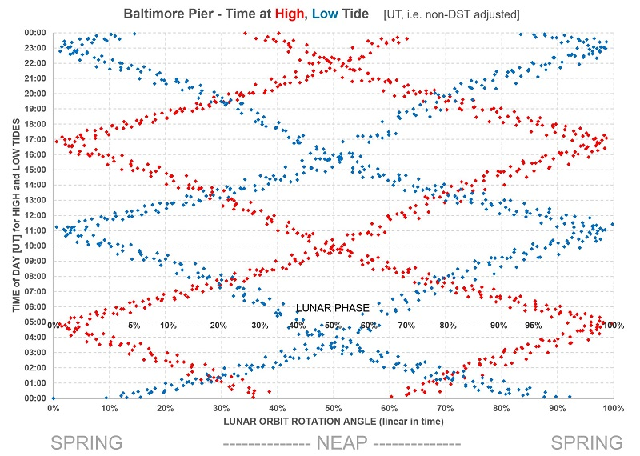

Predicted Tides at Baltimore Pier and Lough Hyne (plus 365-day chart and table)

(click on charts for higher-res images)

The Baltimore Pier tide predictions are computed by a mathematical model based on values derived from tide-height data collected at random times at Baltimore Pier since 2024. Sea-level
heights are established by photographing the steel ladders at the Pier, a useful measurement scale. Pressure is recorded too, since mean sea level
varies approximately 1cm for every unit of pressure.
The height and pressure data, combined with the prevailing astronomical positions of the Sun and Moon, allow one to solve for a set of harmonic constants (wave amplitudes and phase-lags)
for the multiple tidal constituents (M2, S2, N2, K2, M4 and many more), arriving at a “best fit” to the data collected.
These harmonic constants serve as a unique "fingerprint" of our tide at the Pier, and can be usefully used to predict. As more data gets collected, the more accurate
the model becomes.
The Lough Hyne predictions are produced by simulating, using channel-flow theory and the relative level of the outer sea tide as established above, the rate of flow entering or departing the
Lough and thus the incremental volume and, knowing the surface area, the rise or fall of Lough Hyne's water level.
Full 2026 Tides
full data tabulated below

- main block of wavy data: each high and low through the year [scale in cm on LHS]
- upper slightly wavy purple line: Lunar distance from Earth [Earth Radii using LHS]
- green dots: extent, in hours, by which this tide exceeds previous tide minus 24 hours [RH scale]
- lowest pink oscillating line: Moon Phase [0-1 using RH scale i.e. 0-100%]
- air pressure assumed as standard atmospheric pressure at sea-level, i.e. 1013.25 hPa (aka millibars Mercury). Mean sea level
varies by ~1cm (0.01m) per hPa, so tide height should be adjusted up for pressures below 1013.25, and down for pressures above (inverse barometer effect).
High and Low Tide Times (UT i.e. no DST adjustment) plotted against Moonphase

- Each red point represents a High Tide, and each blue is a Low Tide, for all the tides of 2026;
- Any year will have the same general pattern;
- Moonphases close to 0% and 100% represent New Moon and Full Moon respectively, i.e. Spring Tides;
- Moonphase close to 50% represents a Half Moon thus a Neap Tide;
- the chart shows, for example, that a Spring high tide will generally happen around or close to 5pm (6pm in summer);
- also, the Christmas Day swim, taking place as it does at 12am, will always be at around 30% or 70% moonphase, close enough to Neap, meaning the tide level even at highest tide will
never be terribly high; whereas low tides at 12am will always be close to 0% or 100% phase, ie Spring, and therefore the Christmas Day low tides will be very low;
A Note About Accuracy
Based on the data collected at Baltimore Pier, this model has an average error (RMS) of 11.6 11.0cm. The paid-for App I have (WorldTides), corrected for
recorded pressure, etc, has an average error of 13.6 14.1cm .
The Lough Hyne predictions are driven by and based on the level of the sea outside the Lough, so any inaccuracy outside will shift the predicted times for
Lough Hyne too (but it won't necessarily affect the Baltimore-to-LH difference). For example air pressure: predictions are based on standard atmospheric pressure at sea level,
1013.25hPa. Actual pressure on any given day will be different, leading to higher tides in the event of lower pressure, and vice versa; and slightly different
high- and low-tide timings too: low pressure reduces the lag time from the outer sea tide, high pressure increases it.
The predictions nonetheless will be close enough to be useful, retaining the properties of the real tide behaviour. But the true beauty of such a model is its use as
an analytical tool. What is the relationship between intertidal time-lag (or Lough Hyne lag) and Moon Phase (i.e. Spring/Neap)? What is the pattern of the
time-of-day of high- and low-tide in relation to Moon Phase? Why is a Tide Clock necessarily rather inaccurate when not Full or New Moon? With this tool,
these questions are easily answered.
Full Year 2026 - Baltimore Pier & Lough Hyne (all times GMT: add 1 hour if DST applies)
Thu 1 Jan 2026 Baltimore Pier: Low: 09:15 1.03m ~~~ LH:11:57 2.13m
Thu 1 Jan 2026 Baltimore Pier: High: 14:57 3.36m ~~~ LH:16:04 3.16m (+1:07)
Thu 1 Jan 2026 Baltimore Pier: Low: 21:37 1.09m ~~~ LH:00:16 2.13m
Fri 2 Jan 2026 Baltimore Pier: High: 03:27 3.65m ~~~ LH:04:26 3.46m (+0:59)
Fri 2 Jan 2026 Baltimore Pier: Low: 10:20 0.88m ~~~ LH:13:07 2.12m
Fri 2 Jan 2026 Baltimore Pier: High: 16:06 3.51m ~~~ LH:17:12 3.30m (+1:05)
Fri 2 Jan 2026 Baltimore Pier: Low: 22:41 0.98m ~~~ LH:01:22 2.13m
Sat 3 Jan 2026 Baltimore Pier: High: 04:33 3.77m ~~~ LH:05:31 3.60m (+0:58)
Sat 3 Jan 2026 Baltimore Pier: Low: 11:19 0.77m ~~~ LH:14:08 2.12m
Sat 3 Jan 2026 Baltimore Pier: High: 17:09 3.64m ~~~ LH:18:12 3.43m (+1:02)
Sat 3 Jan 2026 Baltimore Pier: Low: 23:38 0.88m ~~~ LH:02:25 2.13m
Sun 4 Jan 2026 Baltimore Pier: High: 05:33 3.86m ~~~ LH:06:31 3.67m (+0:58)
Sun 4 Jan 2026 Baltimore Pier: Low: 12:11 0.70m ~~~ LH:15:06 2.12m
Sun 4 Jan 2026 Baltimore Pier: High: 18:05 3.74m ~~~ LH:19:04 3.54m (+0:58)
Mon 5 Jan 2026 Baltimore Pier: Low: 00:28 0.82m ~~~ LH:03:17 2.13m
Mon 5 Jan 2026 Baltimore Pier: High: 06:26 3.89m ~~~ LH:07:22 3.71m (+0:55)
Mon 5 Jan 2026 Baltimore Pier: Low: 12:55 0.69m ~~~ LH:15:54 2.12m
Mon 5 Jan 2026 Baltimore Pier: High: 18:54 3.80m ~~~ LH:19:52 3.60m (+0:58)
Tue 6 Jan 2026 Baltimore Pier: Low: 01:11 0.80m ~~~ LH:04:07 2.13m
Tue 6 Jan 2026 Baltimore Pier: High: 07:13 3.87m ~~~ LH:08:11 3.67m (+0:58)
Tue 6 Jan 2026 Baltimore Pier: Low: 13:33 0.72m ~~~ LH:16:36 2.12m
Tue 6 Jan 2026 Baltimore Pier: High: 19:38 3.79m ~~~ LH:20:35 3.59m (+0:57)
Wed 7 Jan 2026 Baltimore Pier: Low: 01:49 0.84m ~~~ LH:04:48 2.13m
Wed 7 Jan 2026 Baltimore Pier: High: 07:55 3.78m ~~~ LH:08:53 3.59m (+0:57)
Wed 7 Jan 2026 Baltimore Pier: Low: 14:07 0.80m ~~~ LH:17:15 2.12m
Wed 7 Jan 2026 Baltimore Pier: High: 20:18 3.73m ~~~ LH:21:17 3.52m (+0:58)
Thu 8 Jan 2026 Baltimore Pier: Low: 02:24 0.93m ~~~ LH:05:28 2.13m
Thu 8 Jan 2026 Baltimore Pier: High: 08:35 3.65m ~~~ LH:09:34 3.45m (+0:59)
Thu 8 Jan 2026 Baltimore Pier: Low: 14:39 0.92m ~~~ LH:17:52 2.13m
Thu 8 Jan 2026 Baltimore Pier: High: 20:58 3.60m ~~~ LH:22:01 3.41m (+1:03)
Fri 9 Jan 2026 Baltimore Pier: Low: 02:59 1.06m ~~~ LH:06:08 2.14m
Fri 9 Jan 2026 Baltimore Pier: High: 09:14 3.47m ~~~ LH:10:18 3.27m (+1:04)
Fri 9 Jan 2026 Baltimore Pier: Low: 15:14 1.06m ~~~ LH:18:31 2.13m
Fri 9 Jan 2026 Baltimore Pier: High: 21:39 3.45m ~~~ LH:22:44 3.26m (+1:04)
Sat 10 Jan 2026 Baltimore Pier: Low: 03:38 1.24m ~~~ LH:06:52 2.15m
Sat 10 Jan 2026 Baltimore Pier: High: 09:56 3.29m ~~~ LH:11:04 3.10m (+1:07)
Sat 10 Jan 2026 Baltimore Pier: Low: 15:55 1.21m ~~~ LH:19:16 2.13m
Sat 10 Jan 2026 Baltimore Pier: High: 22:26 3.27m ~~~ LH:23:34 3.09m (+1:08)
Sun 11 Jan 2026 Baltimore Pier: Low: 04:29 1.42m ~~~ LH:07:37 2.15m
Sun 11 Jan 2026 Baltimore Pier: High: 10:44 3.11m ~~~ LH:11:55 2.93m (+1:10)
Sun 11 Jan 2026 Baltimore Pier: Low: 16:51 1.35m ~~~ LH:20:07 2.13m
Sun 11 Jan 2026 Baltimore Pier: High: 23:22 3.13m ~~~ LH:00:34 2.96m (+1:11)
Mon 12 Jan 2026 Baltimore Pier: Low: 05:43 1.55m ~~~ LH:08:35 2.16m
Mon 12 Jan 2026 Baltimore Pier: High: 11:42 2.98m ~~~ LH:12:55 2.81m (+1:13)
Mon 12 Jan 2026 Baltimore Pier: Low: 18:09 1.43m ~~~ LH:21:07 2.13m
Tue 13 Jan 2026 Baltimore Pier: High: 00:26 3.05m ~~~ LH:01:41 2.88m (+1:15)
Tue 13 Jan 2026 Baltimore Pier: Low: 07:03 1.60m ~~~ LH:09:37 2.16m
Tue 13 Jan 2026 Baltimore Pier: High: 12:47 2.92m ~~~ LH:14:02 2.76m (+1:15)
Tue 13 Jan 2026 Baltimore Pier: Low: 19:24 1.43m ~~~ LH:22:08 2.13m
Wed 14 Jan 2026 Baltimore Pier: High: 01:31 3.06m ~~~ LH:02:43 2.89m (+1:12)
Wed 14 Jan 2026 Baltimore Pier: Low: 08:09 1.55m ~~~ LH:10:42 2.16m
Wed 14 Jan 2026 Baltimore Pier: High: 13:51 2.94m ~~~ LH:15:04 2.77m (+1:12)
Wed 14 Jan 2026 Baltimore Pier: Low: 20:25 1.36m ~~~ LH:23:07 2.13m
Thu 15 Jan 2026 Baltimore Pier: High: 02:30 3.13m ~~~ LH:03:42 2.95m (+1:12)
Thu 15 Jan 2026 Baltimore Pier: Low: 09:04 1.43m ~~~ LH:11:38 2.16m
Thu 15 Jan 2026 Baltimore Pier: High: 14:49 3.02m ~~~ LH:16:02 2.84m (+1:13)
Thu 15 Jan 2026 Baltimore Pier: Low: 21:17 1.26m ~~~ LH:23:58 2.13m
Fri 16 Jan 2026 Baltimore Pier: High: 03:21 3.24m ~~~ LH:04:28 3.06m (+1:07)
Fri 16 Jan 2026 Baltimore Pier: Low: 09:51 1.29m ~~~ LH:12:31 2.15m
Fri 16 Jan 2026 Baltimore Pier: High: 15:39 3.13m ~~~ LH:16:48 2.94m (+1:09)
Fri 16 Jan 2026 Baltimore Pier: Low: 22:01 1.17m ~~~ LH:00:45 2.13m
Sat 17 Jan 2026 Baltimore Pier: High: 04:04 3.36m ~~~ LH:05:09 3.18m (+1:04)
Sat 17 Jan 2026 Baltimore Pier: Low: 10:32 1.13m ~~~ LH:13:16 2.14m
Sat 17 Jan 2026 Baltimore Pier: High: 16:23 3.25m ~~~ LH:17:32 3.06m (+1:08)
Sat 17 Jan 2026 Baltimore Pier: Low: 22:41 1.08m ~~~ LH:01:25 2.13m
Sun 18 Jan 2026 Baltimore Pier: High: 04:41 3.49m ~~~ LH:05:43 3.32m (+1:01)
Sun 18 Jan 2026 Baltimore Pier: Low: 11:09 0.98m ~~~ LH:13:57 2.13m
Sun 18 Jan 2026 Baltimore Pier: High: 17:02 3.36m ~~~ LH:18:07 3.16m (+1:05)
Sun 18 Jan 2026 Baltimore Pier: Low: 23:16 1.01m ~~~ LH:01:58 2.13m
Mon 19 Jan 2026 Baltimore Pier: High: 05:14 3.60m ~~~ LH:06:14 3.44m (+0:59)
Mon 19 Jan 2026 Baltimore Pier: Low: 11:42 0.84m ~~~ LH:14:36 2.13m
Mon 19 Jan 2026 Baltimore Pier: High: 17:36 3.46m ~~~ LH:18:42 3.26m (+1:06)
Mon 19 Jan 2026 Baltimore Pier: Low: 23:47 0.96m ~~~ LH:02:35 2.13m
Tue 20 Jan 2026 Baltimore Pier: High: 05:44 3.70m ~~~ LH:06:43 3.53m (+0:58)
Tue 20 Jan 2026 Baltimore Pier: Low: 12:13 0.73m ~~~ LH:15:12 2.12m
Tue 20 Jan 2026 Baltimore Pier: High: 18:08 3.53m ~~~ LH:19:13 3.33m (+1:04)
Wed 21 Jan 2026 Baltimore Pier: Low: 00:16 0.94m ~~~ LH:03:06 2.14m
Wed 21 Jan 2026 Baltimore Pier: High: 06:14 3.77m ~~~ LH:07:12 3.59m (+0:58)
Wed 21 Jan 2026 Baltimore Pier: Low: 12:41 0.68m ~~~ LH:15:46 2.12m
Wed 21 Jan 2026 Baltimore Pier: High: 18:40 3.58m ~~~ LH:19:44 3.37m (+1:04)
Thu 22 Jan 2026 Baltimore Pier: Low: 00:45 0.95m ~~~ LH:03:37 2.14m
Thu 22 Jan 2026 Baltimore Pier: High: 06:44 3.78m ~~~ LH:07:43 3.60m (+0:58)
Thu 22 Jan 2026 Baltimore Pier: Low: 13:09 0.68m ~~~ LH:16:17 2.12m
Thu 22 Jan 2026 Baltimore Pier: High: 19:12 3.58m ~~~ LH:20:17 3.36m (+1:05)
Fri 23 Jan 2026 Baltimore Pier: Low: 01:14 1.00m ~~~ LH:04:15 2.14m
Fri 23 Jan 2026 Baltimore Pier: High: 07:18 3.73m ~~~ LH:08:19 3.52m (+1:00)
Fri 23 Jan 2026 Baltimore Pier: Low: 13:38 0.74m ~~~ LH:16:56 2.12m
Fri 23 Jan 2026 Baltimore Pier: High: 19:48 3.55m ~~~ LH:20:53 3.33m (+1:05)
Sat 24 Jan 2026 Baltimore Pier: Low: 01:47 1.08m ~~~ LH:04:54 2.14m
Sat 24 Jan 2026 Baltimore Pier: High: 07:55 3.61m ~~~ LH:08:58 3.40m (+1:03)
Sat 24 Jan 2026 Baltimore Pier: Low: 14:11 0.86m ~~~ LH:17:35 2.12m
Sat 24 Jan 2026 Baltimore Pier: High: 20:28 3.48m ~~~ LH:21:35 3.26m (+1:07)
Sun 25 Jan 2026 Baltimore Pier: Low: 02:27 1.19m ~~~ LH:05:38 2.15m
Sun 25 Jan 2026 Baltimore Pier: High: 08:40 3.44m ~~~ LH:09:45 3.23m (+1:05)
Sun 25 Jan 2026 Baltimore Pier: Low: 14:51 1.01m ~~~ LH:18:17 2.12m
Sun 25 Jan 2026 Baltimore Pier: High: 21:17 3.38m ~~~ LH:22:26 3.17m (+1:09)
Mon 26 Jan 2026 Baltimore Pier: Low: 03:20 1.32m ~~~ LH:06:37 2.15m
Mon 26 Jan 2026 Baltimore Pier: High: 09:35 3.25m ~~~ LH:10:45 3.04m (+1:10)
Mon 26 Jan 2026 Baltimore Pier: Low: 15:43 1.19m ~~~ LH:19:16 2.12m
Mon 26 Jan 2026 Baltimore Pier: High: 22:17 3.29m ~~~ LH:23:32 3.10m (+1:14)
Tue 27 Jan 2026 Baltimore Pier: Low: 04:39 1.43m ~~~ LH:07:54 2.15m
Tue 27 Jan 2026 Baltimore Pier: High: 10:44 3.09m ~~~ LH:12:02 2.89m (+1:18)
Tue 27 Jan 2026 Baltimore Pier: Low: 17:01 1.34m ~~~ LH:20:25 2.12m
Tue 27 Jan 2026 Baltimore Pier: High: 23:32 3.24m ~~~ LH:00:44 3.06m (+1:12)
Wed 28 Jan 2026 Baltimore Pier: Low: 06:36 1.43m ~~~ LH:09:18 2.14m
Wed 28 Jan 2026 Baltimore Pier: High: 12:09 3.01m ~~~ LH:13:27 2.81m (+1:17)
Wed 28 Jan 2026 Baltimore Pier: Low: 18:56 1.38m ~~~ LH:21:45 2.12m
Thu 29 Jan 2026 Baltimore Pier: High: 00:56 3.27m ~~~ LH:02:06 3.09m (+1:10)
Thu 29 Jan 2026 Baltimore Pier: Low: 08:08 1.31m ~~~ LH:10:47 2.13m
Thu 29 Jan 2026 Baltimore Pier: High: 13:38 3.05m ~~~ LH:14:54 2.85m (+1:15)
Thu 29 Jan 2026 Baltimore Pier: Low: 20:29 1.29m ~~~ LH:23:05 2.12m
Fri 30 Jan 2026 Baltimore Pier: High: 02:18 3.39m ~~~ LH:03:24 3.21m (+1:06)
Fri 30 Jan 2026 Baltimore Pier: Low: 09:24 1.12m ~~~ LH:12:06 2.13m
Fri 30 Jan 2026 Baltimore Pier: High: 14:59 3.20m ~~~ LH:16:12 2.99m (+1:13)
Fri 30 Jan 2026 Baltimore Pier: Low: 21:43 1.14m ~~~ LH:00:17 2.13m
Sat 31 Jan 2026 Baltimore Pier: High: 03:31 3.55m ~~~ LH:04:33 3.37m (+1:02)
Sat 31 Jan 2026 Baltimore Pier: Low: 10:26 0.93m ~~~ LH:13:11 2.12m
Sat 31 Jan 2026 Baltimore Pier: High: 16:06 3.39m ~~~ LH:17:13 3.18m (+1:06)
Sat 31 Jan 2026 Baltimore Pier: Low: 22:43 0.96m ~~~ LH:01:23 2.12m
Sun 1 Feb 2026 Baltimore Pier: High: 04:32 3.72m ~~~ LH:05:32 3.54m (+0:59)
Sun 1 Feb 2026 Baltimore Pier: Low: 11:18 0.78m ~~~ LH:14:06 2.12m
Sun 1 Feb 2026 Baltimore Pier: High: 17:02 3.58m ~~~ LH:18:04 3.36m (+1:01)
Sun 1 Feb 2026 Baltimore Pier: Low: 23:31 0.81m ~~~ LH:02:16 2.12m
Mon 2 Feb 2026 Baltimore Pier: High: 05:24 3.85m ~~~ LH:06:21 3.66m (+0:57)
Mon 2 Feb 2026 Baltimore Pier: Low: 12:00 0.66m ~~~ LH:14:51 2.12m
Mon 2 Feb 2026 Baltimore Pier: High: 17:49 3.73m ~~~ LH:18:49 3.50m (+1:00)
Tue 3 Feb 2026 Baltimore Pier: Low: 00:11 0.71m ~~~ LH:02:58 2.12m
Tue 3 Feb 2026 Baltimore Pier: High: 06:07 3.93m ~~~ LH:07:02 3.74m (+0:54)
Tue 3 Feb 2026 Baltimore Pier: Low: 12:35 0.61m ~~~ LH:15:28 2.12m
Tue 3 Feb 2026 Baltimore Pier: High: 18:29 3.82m ~~~ LH:19:26 3.60m (+0:56)
Wed 4 Feb 2026 Baltimore Pier: Low: 00:45 0.68m ~~~ LH:03:37 2.12m
Wed 4 Feb 2026 Baltimore Pier: High: 06:45 3.94m ~~~ LH:07:41 3.74m (+0:56)
Wed 4 Feb 2026 Baltimore Pier: Low: 13:04 0.60m ~~~ LH:16:06 2.12m
Wed 4 Feb 2026 Baltimore Pier: High: 19:05 3.83m ~~~ LH:20:02 3.62m (+0:57)
Thu 5 Feb 2026 Baltimore Pier: Low: 01:13 0.71m ~~~ LH:04:15 2.12m
Thu 5 Feb 2026 Baltimore Pier: High: 07:19 3.88m ~~~ LH:08:14 3.68m (+0:54)
Thu 5 Feb 2026 Baltimore Pier: Low: 13:30 0.65m ~~~ LH:16:37 2.12m
Thu 5 Feb 2026 Baltimore Pier: High: 19:39 3.76m ~~~ LH:20:37 3.54m (+0:58)
Fri 6 Feb 2026 Baltimore Pier: Low: 01:39 0.81m ~~~ LH:04:46 2.13m
Fri 6 Feb 2026 Baltimore Pier: High: 07:51 3.74m ~~~ LH:08:51 3.54m (+1:00)
Fri 6 Feb 2026 Baltimore Pier: Low: 13:55 0.75m ~~~ LH:17:09 2.12m
Fri 6 Feb 2026 Baltimore Pier: High: 20:13 3.62m ~~~ LH:21:14 3.42m (+1:00)
Sat 7 Feb 2026 Baltimore Pier: Low: 02:05 0.98m ~~~ LH:05:17 2.14m
Sat 7 Feb 2026 Baltimore Pier: High: 08:23 3.55m ~~~ LH:09:24 3.36m (+1:01)
Sat 7 Feb 2026 Baltimore Pier: Low: 14:22 0.89m ~~~ LH:17:46 2.12m
Sat 7 Feb 2026 Baltimore Pier: High: 20:49 3.42m ~~~ LH:21:55 3.22m (+1:05)
Sun 8 Feb 2026 Baltimore Pier: Low: 02:33 1.19m ~~~ LH:05:49 2.15m
Sun 8 Feb 2026 Baltimore Pier: High: 08:57 3.33m ~~~ LH:10:04 3.14m (+1:07)
Sun 8 Feb 2026 Baltimore Pier: Low: 14:53 1.06m ~~~ LH:18:27 2.12m
Sun 8 Feb 2026 Baltimore Pier: High: 21:31 3.20m ~~~ LH:22:43 3.01m (+1:12)
Mon 9 Feb 2026 Baltimore Pier: Low: 03:09 1.42m ~~~ LH:06:29 2.16m
Mon 9 Feb 2026 Baltimore Pier: High: 09:37 3.09m ~~~ LH:10:52 2.92m (+1:15)
Mon 9 Feb 2026 Baltimore Pier: Low: 15:34 1.25m ~~~ LH:19:17 2.12m
Mon 9 Feb 2026 Baltimore Pier: High: 22:23 3.00m ~~~ LH:23:43 2.82m (+1:19)
Tue 10 Feb 2026 Baltimore Pier: Low: 03:59 1.64m ~~~ LH:07:25 2.17m
Tue 10 Feb 2026 Baltimore Pier: High: 10:29 2.88m ~~~ LH:11:52 2.72m (+1:22)
Tue 10 Feb 2026 Baltimore Pier: Low: 16:34 1.43m ~~~ LH:20:18 2.12m
Tue 10 Feb 2026 Baltimore Pier: High: 23:34 2.86m ~~~ LH:00:56 2.70m (+1:21)
Wed 11 Feb 2026 Baltimore Pier: Low: 05:51 1.79m ~~~ LH:08:37 2.17m
Wed 11 Feb 2026 Baltimore Pier: High: 11:44 2.72m ~~~ LH:13:05 2.59m (+1:21)
Wed 11 Feb 2026 Baltimore Pier: Low: 18:29 1.52m ~~~ LH:21:31 2.12m
Thu 12 Feb 2026 Baltimore Pier: High: 00:56 2.84m ~~~ LH:02:16 2.69m (+1:19)
Thu 12 Feb 2026 Baltimore Pier: Low: 07:41 1.73m ~~~ LH:10:06 2.16m
Thu 12 Feb 2026 Baltimore Pier: High: 13:13 2.70m ~~~ LH:14:32 2.56m (+1:19)
Thu 12 Feb 2026 Baltimore Pier: Low: 19:56 1.47m ~~~ LH:22:38 2.12m
Fri 13 Feb 2026 Baltimore Pier: High: 02:07 2.95m ~~~ LH:03:23 2.79m (+1:16)
Fri 13 Feb 2026 Baltimore Pier: Low: 08:47 1.54m ~~~ LH:11:23 2.15m
Fri 13 Feb 2026 Baltimore Pier: High: 14:26 2.81m ~~~ LH:15:43 2.64m (+1:16)
Fri 13 Feb 2026 Baltimore Pier: Low: 20:56 1.34m ~~~ LH:23:36 2.12m
Sat 14 Feb 2026 Baltimore Pier: High: 03:01 3.12m ~~~ LH:04:13 2.95m (+1:11)
Sat 14 Feb 2026 Baltimore Pier: Low: 09:36 1.31m ~~~ LH:12:17 2.14m
Sat 14 Feb 2026 Baltimore Pier: High: 15:21 2.97m ~~~ LH:16:34 2.78m (+1:12)
Sat 14 Feb 2026 Baltimore Pier: Low: 21:42 1.20m ~~~ LH:00:23 2.12m
Sun 15 Feb 2026 Baltimore Pier: High: 03:44 3.32m ~~~ LH:04:51 3.14m (+1:07)
Sun 15 Feb 2026 Baltimore Pier: Low: 10:16 1.07m ~~~ LH:13:05 2.13m
Sun 15 Feb 2026 Baltimore Pier: High: 16:05 3.16m ~~~ LH:17:14 2.96m (+1:09)
Sun 15 Feb 2026 Baltimore Pier: Low: 22:21 1.05m ~~~ LH:00:58 2.13m
Mon 16 Feb 2026 Baltimore Pier: High: 04:18 3.52m ~~~ LH:05:21 3.34m (+1:03)
Mon 16 Feb 2026 Baltimore Pier: Low: 10:50 0.84m ~~~ LH:13:43 2.12m
Mon 16 Feb 2026 Baltimore Pier: High: 16:40 3.34m ~~~ LH:17:47 3.12m (+1:06)
Mon 16 Feb 2026 Baltimore Pier: Low: 22:54 0.93m ~~~ LH:01:36 2.13m
Tue 17 Feb 2026 Baltimore Pier: High: 04:48 3.69m ~~~ LH:05:46 3.51m (+0:57)
Tue 17 Feb 2026 Baltimore Pier: Low: 11:21 0.66m ~~~ LH:14:16 2.12m
Tue 17 Feb 2026 Baltimore Pier: High: 17:12 3.49m ~~~ LH:18:16 3.27m (+1:04)
Tue 17 Feb 2026 Baltimore Pier: Low: 23:23 0.83m ~~~ LH:02:07 2.13m
Wed 18 Feb 2026 Baltimore Pier: High: 05:17 3.83m ~~~ LH:06:13 3.66m (+0:56)
Wed 18 Feb 2026 Baltimore Pier: Low: 11:49 0.53m ~~~ LH:14:47 2.11m
Wed 18 Feb 2026 Baltimore Pier: High: 17:41 3.61m ~~~ LH:18:44 3.39m (+1:02)
Wed 18 Feb 2026 Baltimore Pier: Low: 23:51 0.78m ~~~ LH:02:38 2.13m
Thu 19 Feb 2026 Baltimore Pier: High: 05:46 3.91m ~~~ LH:06:42 3.73m (+0:56)
Thu 19 Feb 2026 Baltimore Pier: Low: 12:16 0.48m ~~~ LH:15:18 2.11m
Thu 19 Feb 2026 Baltimore Pier: High: 18:11 3.68m ~~~ LH:19:13 3.46m (+1:02)
Fri 20 Feb 2026 Baltimore Pier: Low: 00:18 0.77m ~~~ LH:03:15 2.13m
Fri 20 Feb 2026 Baltimore Pier: High: 06:17 3.91m ~~~ LH:07:13 3.72m (+0:56)
Fri 20 Feb 2026 Baltimore Pier: Low: 12:42 0.50m ~~~ LH:15:54 2.11m
Fri 20 Feb 2026 Baltimore Pier: High: 18:43 3.70m ~~~ LH:19:46 3.47m (+1:02)
Sat 21 Feb 2026 Baltimore Pier: Low: 00:48 0.82m ~~~ LH:03:48 2.13m
Sat 21 Feb 2026 Baltimore Pier: High: 06:51 3.84m ~~~ LH:07:51 3.63m (+0:59)
Sat 21 Feb 2026 Baltimore Pier: Low: 13:11 0.59m ~~~ LH:16:27 2.11m
Sat 21 Feb 2026 Baltimore Pier: High: 19:21 3.65m ~~~ LH:20:24 3.43m (+1:03)
Sun 22 Feb 2026 Baltimore Pier: Low: 01:22 0.91m ~~~ LH:04:33 2.13m
Sun 22 Feb 2026 Baltimore Pier: High: 07:32 3.68m ~~~ LH:08:33 3.47m (+1:01)
Sun 22 Feb 2026 Baltimore Pier: Low: 13:44 0.74m ~~~ LH:17:09 2.11m
Sun 22 Feb 2026 Baltimore Pier: High: 20:05 3.55m ~~~ LH:21:12 3.33m (+1:07)
Mon 23 Feb 2026 Baltimore Pier: Low: 02:03 1.06m ~~~ LH:05:24 2.14m
Mon 23 Feb 2026 Baltimore Pier: High: 08:21 3.47m ~~~ LH:09:26 3.25m (+1:05)
Mon 23 Feb 2026 Baltimore Pier: Low: 14:26 0.93m ~~~ LH:18:02 2.12m
Mon 23 Feb 2026 Baltimore Pier: High: 20:58 3.41m ~~~ LH:22:08 3.18m (+1:09)
Tue 24 Feb 2026 Baltimore Pier: Low: 02:56 1.24m ~~~ LH:06:27 2.14m
Tue 24 Feb 2026 Baltimore Pier: High: 09:21 3.23m ~~~ LH:10:33 3.01m (+1:12)
Tue 24 Feb 2026 Baltimore Pier: Low: 15:20 1.15m ~~~ LH:19:06 2.12m
Tue 24 Feb 2026 Baltimore Pier: High: 22:05 3.25m ~~~ LH:23:21 3.04m (+1:15)
Wed 25 Feb 2026 Baltimore Pier: Low: 04:12 1.42m ~~~ LH:07:47 2.14m
Wed 25 Feb 2026 Baltimore Pier: High: 10:36 3.01m ~~~ LH:11:54 2.80m (+1:17)
Wed 25 Feb 2026 Baltimore Pier: Low: 16:39 1.35m ~~~ LH:20:24 2.12m
Wed 25 Feb 2026 Baltimore Pier: High: 23:28 3.14m ~~~ LH:00:44 2.95m (+1:16)
Thu 26 Feb 2026 Baltimore Pier: Low: 06:36 1.49m ~~~ LH:09:24 2.14m
Thu 26 Feb 2026 Baltimore Pier: High: 12:07 2.90m ~~~ LH:13:31 2.70m (+1:23)
Thu 26 Feb 2026 Baltimore Pier: Low: 19:04 1.41m ~~~ LH:21:51 2.11m
Fri 27 Feb 2026 Baltimore Pier: High: 01:00 3.14m ~~~ LH:02:15 2.96m (+1:14)
Fri 27 Feb 2026 Baltimore Pier: Low: 08:17 1.36m ~~~ LH:10:55 2.13m
Fri 27 Feb 2026 Baltimore Pier: High: 13:41 2.95m ~~~ LH:15:02 2.74m (+1:20)
Fri 27 Feb 2026 Baltimore Pier: Low: 20:38 1.27m ~~~ LH:23:15 2.11m
Sat 28 Feb 2026 Baltimore Pier: High: 02:24 3.28m ~~~ LH:03:33 3.09m (+1:09)
Sat 28 Feb 2026 Baltimore Pier: Low: 09:27 1.15m ~~~ LH:12:07 2.13m
Sat 28 Feb 2026 Baltimore Pier: High: 14:58 3.13m ~~~ LH:16:12 2.91m (+1:14)
Sat 28 Feb 2026 Baltimore Pier: Low: 21:43 1.06m ~~~ LH:00:21 2.12m
Sun 1 Mar 2026 Baltimore Pier: High: 03:29 3.48m ~~~ LH:04:33 3.28m (+1:03)
Sun 1 Mar 2026 Baltimore Pier: Low: 10:20 0.93m ~~~ LH:13:05 2.12m
Sun 1 Mar 2026 Baltimore Pier: High: 15:56 3.35m ~~~ LH:17:03 3.13m (+1:07)
Sun 1 Mar 2026 Baltimore Pier: Low: 22:32 0.85m ~~~ LH:01:16 2.11m
Mon 2 Mar 2026 Baltimore Pier: High: 04:21 3.68m ~~~ LH:05:22 3.48m (+1:01)
Mon 2 Mar 2026 Baltimore Pier: Low: 11:01 0.75m ~~~ LH:13:47 2.12m
Mon 2 Mar 2026 Baltimore Pier: High: 16:42 3.57m ~~~ LH:17:44 3.34m (+1:01)
Mon 2 Mar 2026 Baltimore Pier: Low: 23:10 0.68m ~~~ LH:01:57 2.11m
Tue 3 Mar 2026 Baltimore Pier: High: 05:02 3.84m ~~~ LH:06:01 3.64m (+0:58)
Tue 3 Mar 2026 Baltimore Pier: Low: 11:35 0.61m ~~~ LH:14:26 2.12m
Tue 3 Mar 2026 Baltimore Pier: High: 17:21 3.73m ~~~ LH:18:22 3.50m (+1:00)
Tue 3 Mar 2026 Baltimore Pier: Low: 23:42 0.58m ~~~ LH:02:35 2.11m
Wed 4 Mar 2026 Baltimore Pier: High: 05:38 3.94m ~~~ LH:06:32 3.74m (+0:54)
Wed 4 Mar 2026 Baltimore Pier: Low: 12:02 0.53m ~~~ LH:14:57 2.12m
Wed 4 Mar 2026 Baltimore Pier: High: 17:55 3.81m ~~~ LH:18:52 3.59m (+0:57)
Thu 5 Mar 2026 Baltimore Pier: Low: 00:08 0.56m ~~~ LH:03:06 2.11m
Thu 5 Mar 2026 Baltimore Pier: High: 06:09 3.96m ~~~ LH:07:03 3.76m (+0:53)
Thu 5 Mar 2026 Baltimore Pier: Low: 12:26 0.51m ~~~ LH:15:27 2.11m
Thu 5 Mar 2026 Baltimore Pier: High: 18:26 3.80m ~~~ LH:19:23 3.58m (+0:57)
Fri 6 Mar 2026 Baltimore Pier: Low: 00:31 0.62m ~~~ LH:03:35 2.12m
Fri 6 Mar 2026 Baltimore Pier: High: 06:38 3.89m ~~~ LH:07:33 3.70m (+0:55)
Fri 6 Mar 2026 Baltimore Pier: Low: 12:48 0.55m ~~~ LH:15:57 2.11m
Fri 6 Mar 2026 Baltimore Pier: High: 18:57 3.71m ~~~ LH:19:56 3.49m (+0:59)
Sat 7 Mar 2026 Baltimore Pier: Low: 00:52 0.75m ~~~ LH:04:01 2.12m
Sat 7 Mar 2026 Baltimore Pier: High: 07:06 3.76m ~~~ LH:08:04 3.56m (+0:57)
Sat 7 Mar 2026 Baltimore Pier: Low: 13:11 0.65m ~~~ LH:16:31 2.11m
Sat 7 Mar 2026 Baltimore Pier: High: 19:28 3.55m ~~~ LH:20:33 3.33m (+1:04)
Sun 8 Mar 2026 Baltimore Pier: Low: 01:15 0.92m ~~~ LH:04:27 2.13m
Sun 8 Mar 2026 Baltimore Pier: High: 07:35 3.56m ~~~ LH:08:37 3.36m (+1:01)
Sun 8 Mar 2026 Baltimore Pier: Low: 13:36 0.79m ~~~ LH:17:06 2.11m
Sun 8 Mar 2026 Baltimore Pier: High: 20:02 3.33m ~~~ LH:21:13 3.12m (+1:10)
Mon 9 Mar 2026 Baltimore Pier: Low: 01:41 1.13m ~~~ LH:04:58 2.14m
Mon 9 Mar 2026 Baltimore Pier: High: 08:06 3.33m ~~~ LH:09:14 3.15m (+1:08)
Mon 9 Mar 2026 Baltimore Pier: Low: 14:06 0.97m ~~~ LH:17:46 2.12m
Mon 9 Mar 2026 Baltimore Pier: High: 20:41 3.10m ~~~ LH:22:00 2.89m (+1:19)
Tue 10 Mar 2026 Baltimore Pier: Low: 02:14 1.37m ~~~ LH:05:36 2.15m
Tue 10 Mar 2026 Baltimore Pier: High: 08:42 3.09m ~~~ LH:09:57 2.90m (+1:14)
Tue 10 Mar 2026 Baltimore Pier: Low: 14:43 1.17m ~~~ LH:18:36 2.11m
Tue 10 Mar 2026 Baltimore Pier: High: 21:29 2.88m ~~~ LH:22:55 2.70m (+1:26)
Wed 11 Mar 2026 Baltimore Pier: Low: 02:57 1.60m ~~~ LH:06:26 2.16m
Wed 11 Mar 2026 Baltimore Pier: High: 09:28 2.84m ~~~ LH:10:53 2.68m (+1:24)
Wed 11 Mar 2026 Baltimore Pier: Low: 15:34 1.38m ~~~ LH:19:37 2.11m
Wed 11 Mar 2026 Baltimore Pier: High: 22:37 2.72m ~~~ LH:00:13 2.56m (+1:35)
Thu 12 Mar 2026 Baltimore Pier: Low: 04:07 1.79m ~~~ LH:07:46 2.16m
Thu 12 Mar 2026 Baltimore Pier: High: 10:39 2.64m ~~~ LH:12:13 2.50m (+1:33)
Thu 12 Mar 2026 Baltimore Pier: Low: 17:07 1.55m ~~~ LH:20:55 2.11m
Fri 13 Mar 2026 Baltimore Pier: High: 00:12 2.69m ~~~ LH:01:43 2.54m (+1:30)
Fri 13 Mar 2026 Baltimore Pier: Low: 07:05 1.78m ~~~ LH:09:29 2.15m
Fri 13 Mar 2026 Baltimore Pier: High: 12:28 2.57m ~~~ LH:13:54 2.44m (+1:26)
Fri 13 Mar 2026 Baltimore Pier: Low: 19:23 1.51m ~~~ LH:22:07 2.10m
Sat 14 Mar 2026 Baltimore Pier: High: 01:33 2.82m ~~~ LH:02:54 2.66m (+1:20)
Sat 14 Mar 2026 Baltimore Pier: Low: 08:18 1.54m ~~~ LH:10:56 2.14m
Sat 14 Mar 2026 Baltimore Pier: High: 13:55 2.69m ~~~ LH:15:14 2.53m (+1:19)
Sat 14 Mar 2026 Baltimore Pier: Low: 20:26 1.36m ~~~ LH:23:06 2.11m
Sun 15 Mar 2026 Baltimore Pier: High: 02:28 3.04m ~~~ LH:03:43 2.87m (+1:14)
Sun 15 Mar 2026 Baltimore Pier: Low: 09:06 1.26m ~~~ LH:11:55 2.13m
Sun 15 Mar 2026 Baltimore Pier: High: 14:50 2.90m ~~~ LH:16:06 2.70m (+1:15)
Sun 15 Mar 2026 Baltimore Pier: Low: 21:11 1.17m ~~~ LH:23:50 2.12m
Mon 16 Mar 2026 Baltimore Pier: High: 03:09 3.28m ~~~ LH:04:15 3.10m (+1:06)
Mon 16 Mar 2026 Baltimore Pier: Low: 09:44 0.97m ~~~ LH:12:36 2.12m
Mon 16 Mar 2026 Baltimore Pier: High: 15:31 3.13m ~~~ LH:16:43 2.92m (+1:12)
Mon 16 Mar 2026 Baltimore Pier: Low: 21:48 0.98m ~~~ LH:00:27 2.12m
Tue 17 Mar 2026 Baltimore Pier: High: 03:42 3.52m ~~~ LH:04:43 3.34m (+1:01)
Tue 17 Mar 2026 Baltimore Pier: Low: 10:16 0.72m ~~~ LH:13:08 2.12m
Tue 17 Mar 2026 Baltimore Pier: High: 16:04 3.35m ~~~ LH:17:13 3.13m (+1:08)
Tue 17 Mar 2026 Baltimore Pier: Low: 22:20 0.81m ~~~ LH:01:05 2.12m
Wed 18 Mar 2026 Baltimore Pier: High: 04:12 3.72m ~~~ LH:05:12 3.54m (+0:59)
Wed 18 Mar 2026 Baltimore Pier: Low: 10:46 0.54m ~~~ LH:13:44 2.11m
Wed 18 Mar 2026 Baltimore Pier: High: 16:35 3.53m ~~~ LH:17:42 3.31m (+1:06)
Wed 18 Mar 2026 Baltimore Pier: Low: 22:50 0.69m ~~~ LH:01:37 2.12m
Thu 19 Mar 2026 Baltimore Pier: High: 04:43 3.87m ~~~ LH:05:41 3.68m (+0:58)
Thu 19 Mar 2026 Baltimore Pier: Low: 11:15 0.42m ~~~ LH:14:16 2.11m
Thu 19 Mar 2026 Baltimore Pier: High: 17:06 3.67m ~~~ LH:18:11 3.44m (+1:04)
Thu 19 Mar 2026 Baltimore Pier: Low: 23:20 0.62m ~~~ LH:02:14 2.12m
Fri 20 Mar 2026 Baltimore Pier: High: 05:15 3.94m ~~~ LH:06:12 3.75m (+0:56)
Fri 20 Mar 2026 Baltimore Pier: Low: 11:45 0.39m ~~~ LH:14:48 2.11m
Fri 20 Mar 2026 Baltimore Pier: High: 17:40 3.75m ~~~ LH:18:42 3.52m (+1:02)
Fri 20 Mar 2026 Baltimore Pier: Low: 23:52 0.61m ~~~ LH:02:53 2.12m
Sat 21 Mar 2026 Baltimore Pier: High: 05:51 3.93m ~~~ LH:06:51 3.72m (+0:59)
Sat 21 Mar 2026 Baltimore Pier: Low: 12:16 0.44m ~~~ LH:15:27 2.11m
Sat 21 Mar 2026 Baltimore Pier: High: 18:18 3.75m ~~~ LH:19:21 3.52m (+1:03)
Sun 22 Mar 2026 Baltimore Pier: Low: 00:27 0.66m ~~~ LH:03:36 2.12m
Sun 22 Mar 2026 Baltimore Pier: High: 06:33 3.83m ~~~ LH:07:32 3.62m (+0:59)
Sun 22 Mar 2026 Baltimore Pier: Low: 12:51 0.55m ~~~ LH:16:11 2.11m
Sun 22 Mar 2026 Baltimore Pier: High: 19:03 3.68m ~~~ LH:20:05 3.45m (+1:02)
Mon 23 Mar 2026 Baltimore Pier: Low: 01:07 0.78m ~~~ LH:04:26 2.12m
Mon 23 Mar 2026 Baltimore Pier: High: 07:22 3.66m ~~~ LH:08:24 3.44m (+1:01)
Mon 23 Mar 2026 Baltimore Pier: Low: 13:31 0.72m ~~~ LH:17:02 2.11m
Mon 23 Mar 2026 Baltimore Pier: High: 19:55 3.54m ~~~ LH:21:02 3.32m (+1:07)
Tue 24 Mar 2026 Baltimore Pier: Low: 01:55 0.96m ~~~ LH:05:25 2.12m
Tue 24 Mar 2026 Baltimore Pier: High: 08:18 3.43m ~~~ LH:09:25 3.20m (+1:06)
Tue 24 Mar 2026 Baltimore Pier: Low: 14:20 0.92m ~~~ LH:18:01 2.11m
Tue 24 Mar 2026 Baltimore Pier: High: 20:56 3.36m ~~~ LH:22:05 3.13m (+1:09)
Wed 25 Mar 2026 Baltimore Pier: Low: 02:52 1.17m ~~~ LH:06:34 2.13m
Wed 25 Mar 2026 Baltimore Pier: High: 09:24 3.18m ~~~ LH:10:37 2.95m (+1:12)
Wed 25 Mar 2026 Baltimore Pier: Low: 15:20 1.14m ~~~ LH:19:12 2.11m
Wed 25 Mar 2026 Baltimore Pier: High: 22:08 3.17m ~~~ LH:23:23 2.95m (+1:15)
Thu 26 Mar 2026 Baltimore Pier: Low: 04:09 1.38m ~~~ LH:07:55 2.13m
Thu 26 Mar 2026 Baltimore Pier: High: 10:41 2.97m ~~~ LH:12:02 2.76m (+1:21)
Thu 26 Mar 2026 Baltimore Pier: Low: 16:47 1.33m ~~~ LH:20:36 2.11m
Thu 26 Mar 2026 Baltimore Pier: High: 23:32 3.03m ~~~ LH:00:53 2.83m (+1:20)
Fri 27 Mar 2026 Baltimore Pier: Low: 06:39 1.48m ~~~ LH:09:26 2.13m
Fri 27 Mar 2026 Baltimore Pier: High: 12:10 2.87m ~~~ LH:13:32 2.67m (+1:22)
Fri 27 Mar 2026 Baltimore Pier: Low: 19:15 1.34m ~~~ LH:22:00 2.11m
Sat 28 Mar 2026 Baltimore Pier: High: 01:02 3.04m ~~~ LH:02:22 2.84m (+1:19)
Sat 28 Mar 2026 Baltimore Pier: Low: 08:11 1.35m ~~~ LH:10:47 2.13m
Sat 28 Mar 2026 Baltimore Pier: High: 13:35 2.94m ~~~ LH:14:53 2.73m (+1:18)
Sat 28 Mar 2026 Baltimore Pier: Low: 20:33 1.17m ~~~ LH:23:16 2.11m
Sun 29 Mar 2026 Baltimore Pier: High: 03:17 3.20m ~~~ LH:04:31 2.99m (+1:14)
Sun 29 Mar 2026 Baltimore Pier: Low: 10:11 1.14m ~~~ LH:12:53 2.12m
Sun 29 Mar 2026 Baltimore Pier: High: 15:42 3.13m ~~~ LH:16:54 2.91m (+1:12)
Sun 29 Mar 2026 Baltimore Pier: Low: 22:26 0.94m ~~~ LH:01:12 2.11m
Mon 30 Mar 2026 Baltimore Pier: High: 04:13 3.41m ~~~ LH:05:21 3.19m (+1:08)
Mon 30 Mar 2026 Baltimore Pier: Low: 10:55 0.92m ~~~ LH:13:38 2.12m
Mon 30 Mar 2026 Baltimore Pier: High: 16:32 3.35m ~~~ LH:17:40 3.11m (+1:08)
Mon 30 Mar 2026 Baltimore Pier: Low: 23:06 0.74m ~~~ LH:01:56 2.11m
Tue 31 Mar 2026 Baltimore Pier: High: 04:56 3.61m ~~~ LH:05:58 3.39m (+1:01)
Tue 31 Mar 2026 Baltimore Pier: Low: 11:31 0.73m ~~~ LH:14:17 2.12m
Tue 31 Mar 2026 Baltimore Pier: High: 17:12 3.55m ~~~ LH:18:14 3.31m (+1:02)
Tue 31 Mar 2026 Baltimore Pier: Low: 23:39 0.59m ~~~ LH:02:31 2.11m
Wed 1 Apr 2026 Baltimore Pier: High: 05:32 3.77m ~~~ LH:06:32 3.56m (+0:59)
Wed 1 Apr 2026 Baltimore Pier: Low: 12:00 0.60m ~~~ LH:14:53 2.11m
Wed 1 Apr 2026 Baltimore Pier: High: 17:46 3.68m ~~~ LH:18:45 3.44m (+0:59)
Wed 1 Apr 2026 Baltimore Pier: Low: 00:06 0.52m ~~~ LH:03:03 2.11m
Thu 2 Apr 2026 Baltimore Pier: High: 06:03 3.86m ~~~ LH:07:01 3.65m (+0:58)
Thu 2 Apr 2026 Baltimore Pier: Low: 12:25 0.52m ~~~ LH:15:25 2.11m
Thu 2 Apr 2026 Baltimore Pier: High: 18:18 3.73m ~~~ LH:19:17 3.49m (+0:58)
Thu 2 Apr 2026 Baltimore Pier: Low: 00:30 0.53m ~~~ LH:03:28 2.11m
Fri 3 Apr 2026 Baltimore Pier: High: 06:32 3.87m ~~~ LH:07:31 3.65m (+0:58)
Fri 3 Apr 2026 Baltimore Pier: Low: 12:49 0.50m ~~~ LH:15:55 2.11m
Fri 3 Apr 2026 Baltimore Pier: High: 18:49 3.70m ~~~ LH:19:51 3.47m (+1:02)
Fri 3 Apr 2026 Baltimore Pier: Low: 00:52 0.61m ~~~ LH:03:57 2.11m
Sat 4 Apr 2026 Baltimore Pier: High: 07:01 3.81m ~~~ LH:07:58 3.59m (+0:57)
Sat 4 Apr 2026 Baltimore Pier: Low: 13:11 0.54m ~~~ LH:16:26 2.11m
Sat 4 Apr 2026 Baltimore Pier: High: 19:20 3.59m ~~~ LH:20:23 3.37m (+1:02)
Sun 5 Apr 2026 Baltimore Pier: Low: 01:13 0.74m ~~~ LH:04:26 2.12m
Sun 5 Apr 2026 Baltimore Pier: High: 07:29 3.68m ~~~ LH:08:31 3.47m (+1:02)
Sun 5 Apr 2026 Baltimore Pier: Low: 13:35 0.63m ~~~ LH:16:57 2.11m
Sun 5 Apr 2026 Baltimore Pier: High: 19:52 3.43m ~~~ LH:21:01 3.20m (+1:09)
Mon 6 Apr 2026 Baltimore Pier: Low: 01:37 0.90m ~~~ LH:04:55 2.12m
Mon 6 Apr 2026 Baltimore Pier: High: 07:58 3.50m ~~~ LH:09:03 3.30m (+1:04)
Mon 6 Apr 2026 Baltimore Pier: Low: 14:01 0.76m ~~~ LH:17:36 2.11m
Mon 6 Apr 2026 Baltimore Pier: High: 20:25 3.23m ~~~ LH:21:40 3.01m (+1:14)
Tue 7 Apr 2026 Baltimore Pier: Low: 02:06 1.08m ~~~ LH:05:26 2.13m
Tue 7 Apr 2026 Baltimore Pier: High: 08:29 3.30m ~~~ LH:09:42 3.10m (+1:12)
Tue 7 Apr 2026 Baltimore Pier: Low: 14:33 0.93m ~~~ LH:18:16 2.11m
Tue 7 Apr 2026 Baltimore Pier: High: 21:02 3.03m ~~~ LH:22:23 2.82m (+1:20)
Wed 8 Apr 2026 Baltimore Pier: Low: 02:40 1.27m ~~~ LH:06:06 2.13m
Wed 8 Apr 2026 Baltimore Pier: High: 09:06 3.07m ~~~ LH:10:23 2.88m (+1:17)
Wed 8 Apr 2026 Baltimore Pier: Low: 15:11 1.12m ~~~ LH:19:04 2.11m
Wed 8 Apr 2026 Baltimore Pier: High: 21:47 2.85m ~~~ LH:23:15 2.65m (+1:27)
Thu 9 Apr 2026 Baltimore Pier: Low: 03:24 1.47m ~~~ LH:06:56 2.14m
Thu 9 Apr 2026 Baltimore Pier: High: 09:52 2.84m ~~~ LH:11:18 2.66m (+1:25)
Thu 9 Apr 2026 Baltimore Pier: Low: 15:59 1.33m ~~~ LH:20:01 2.11m
Thu 9 Apr 2026 Baltimore Pier: High: 22:45 2.70m ~~~ LH:00:23 2.53m (+1:37)
Fri 10 Apr 2026 Baltimore Pier: Low: 04:27 1.65m ~~~ LH:08:14 2.13m
Fri 10 Apr 2026 Baltimore Pier: High: 10:58 2.65m ~~~ LH:12:34 2.49m (+1:35)
Fri 10 Apr 2026 Baltimore Pier: Low: 17:13 1.50m ~~~ LH:21:12 2.10m
Fri 10 Apr 2026 Baltimore Pier: High: 00:08 2.66m ~~~ LH:01:46 2.50m (+1:37)
Sat 11 Apr 2026 Baltimore Pier: Low: 07:05 1.68m ~~~ LH:09:48 2.13m
Sat 11 Apr 2026 Baltimore Pier: High: 12:35 2.57m ~~~ LH:14:12 2.42m (+1:37)
Sat 11 Apr 2026 Baltimore Pier: Low: 19:33 1.50m ~~~ LH:22:24 2.10m
Sun 12 Apr 2026 Baltimore Pier: High: 01:35 2.76m ~~~ LH:03:03 2.60m (+1:27)
Sun 12 Apr 2026 Baltimore Pier: Low: 08:29 1.47m ~~~ LH:11:14 2.12m
Sun 12 Apr 2026 Baltimore Pier: High: 14:05 2.68m ~~~ LH:15:32 2.51m (+1:26)
Sun 12 Apr 2026 Baltimore Pier: Low: 20:42 1.34m ~~~ LH:23:24 2.11m
Mon 13 Apr 2026 Baltimore Pier: High: 02:36 2.97m ~~~ LH:03:53 2.79m (+1:17)
Mon 13 Apr 2026 Baltimore Pier: Low: 09:19 1.19m ~~~ LH:12:07 2.12m
Mon 13 Apr 2026 Baltimore Pier: High: 15:02 2.89m ~~~ LH:16:22 2.69m (+1:20)
Mon 13 Apr 2026 Baltimore Pier: Low: 21:28 1.13m ~~~ LH:00:08 2.11m
Tue 14 Apr 2026 Baltimore Pier: High: 03:20 3.22m ~~~ LH:04:32 3.03m (+1:12)
Tue 14 Apr 2026 Baltimore Pier: Low: 09:59 0.92m ~~~ LH:12:52 2.11m
Tue 14 Apr 2026 Baltimore Pier: High: 15:44 3.13m ~~~ LH:16:56 2.91m (+1:12)
Tue 14 Apr 2026 Baltimore Pier: Low: 22:07 0.92m ~~~ LH:00:51 2.11m
Wed 15 Apr 2026 Baltimore Pier: High: 03:57 3.46m ~~~ LH:05:02 3.26m (+1:05)
Wed 15 Apr 2026 Baltimore Pier: Low: 10:34 0.69m ~~~ LH:13:27 2.11m
Wed 15 Apr 2026 Baltimore Pier: High: 16:20 3.36m ~~~ LH:17:28 3.12m (+1:08)
Wed 15 Apr 2026 Baltimore Pier: Low: 22:42 0.73m ~~~ LH:01:28 2.11m
Thu 16 Apr 2026 Baltimore Pier: High: 04:32 3.65m ~~~ LH:05:33 3.46m (+1:00)
Thu 16 Apr 2026 Baltimore Pier: Low: 11:07 0.53m ~~~ LH:14:05 2.11m
Thu 16 Apr 2026 Baltimore Pier: High: 16:55 3.55m ~~~ LH:18:02 3.32m (+1:06)
Thu 16 Apr 2026 Baltimore Pier: Low: 23:18 0.59m ~~~ LH:02:08 2.11m
Fri 17 Apr 2026 Baltimore Pier: High: 05:09 3.79m ~~~ LH:06:11 3.58m (+1:01)
Fri 17 Apr 2026 Baltimore Pier: Low: 11:42 0.44m ~~~ LH:14:43 2.11m
Fri 17 Apr 2026 Baltimore Pier: High: 17:33 3.69m ~~~ LH:18:34 3.46m (+1:01)
Fri 17 Apr 2026 Baltimore Pier: Low: 23:55 0.51m ~~~ LH:02:55 2.11m
Sat 18 Apr 2026 Baltimore Pier: High: 05:50 3.85m ~~~ LH:06:51 3.64m (+1:00)
Sat 18 Apr 2026 Baltimore Pier: Low: 12:19 0.43m ~~~ LH:15:26 2.10m
Sat 18 Apr 2026 Baltimore Pier: High: 18:15 3.75m ~~~ LH:19:15 3.52m (+1:00)
Sat 18 Apr 2026 Baltimore Pier: Low: 00:35 0.51m ~~~ LH:03:42 2.11m
Sun 19 Apr 2026 Baltimore Pier: High: 06:37 3.84m ~~~ LH:07:35 3.61m (+0:58)
Sun 19 Apr 2026 Baltimore Pier: Low: 13:00 0.48m ~~~ LH:16:13 2.10m
Sun 19 Apr 2026 Baltimore Pier: High: 19:03 3.75m ~~~ LH:20:04 3.52m (+1:00)
Mon 20 Apr 2026 Baltimore Pier: Low: 01:20 0.57m ~~~ LH:04:36 2.11m
Mon 20 Apr 2026 Baltimore Pier: High: 07:29 3.74m ~~~ LH:08:32 3.52m (+1:02)
Mon 20 Apr 2026 Baltimore Pier: Low: 13:44 0.59m ~~~ LH:17:06 2.11m
Mon 20 Apr 2026 Baltimore Pier: High: 19:58 3.66m ~~~ LH:21:02 3.43m (+1:04)
Tue 21 Apr 2026 Baltimore Pier: Low: 02:08 0.69m ~~~ LH:05:35 2.11m
Tue 21 Apr 2026 Baltimore Pier: High: 08:26 3.59m ~~~ LH:09:32 3.36m (+1:06)
Tue 21 Apr 2026 Baltimore Pier: Low: 14:33 0.75m ~~~ LH:18:06 2.11m
Tue 21 Apr 2026 Baltimore Pier: High: 20:57 3.51m ~~~ LH:22:03 3.28m (+1:06)
Wed 22 Apr 2026 Baltimore Pier: Low: 03:01 0.87m ~~~ LH:06:36 2.11m
Wed 22 Apr 2026 Baltimore Pier: High: 09:26 3.39m ~~~ LH:10:34 3.15m (+1:08)
Wed 22 Apr 2026 Baltimore Pier: Low: 15:27 0.93m ~~~ LH:19:07 2.11m
Wed 22 Apr 2026 Baltimore Pier: High: 22:00 3.31m ~~~ LH:23:12 3.08m (+1:12)
Thu 23 Apr 2026 Baltimore Pier: Low: 03:59 1.08m ~~~ LH:07:42 2.12m
Thu 23 Apr 2026 Baltimore Pier: High: 10:31 3.18m ~~~ LH:11:44 2.95m (+1:13)
Thu 23 Apr 2026 Baltimore Pier: Low: 16:30 1.12m ~~~ LH:20:17 2.11m
Thu 23 Apr 2026 Baltimore Pier: High: 23:09 3.12m ~~~ LH:00:25 2.89m (+1:15)
Fri 24 Apr 2026 Baltimore Pier: Low: 05:12 1.29m ~~~ LH:08:55 2.12m
Fri 24 Apr 2026 Baltimore Pier: High: 11:41 3.01m ~~~ LH:13:01 2.79m (+1:20)
Fri 24 Apr 2026 Baltimore Pier: Low: 18:05 1.26m ~~~ LH:21:36 2.11m
Fri 24 Apr 2026 Baltimore Pier: High: 00:26 2.99m ~~~ LH:01:45 2.78m (+1:18)
Sat 25 Apr 2026 Baltimore Pier: Low: 07:17 1.39m ~~~ LH:10:08 2.12m
Sat 25 Apr 2026 Baltimore Pier: High: 12:58 2.94m ~~~ LH:14:16 2.73m (+1:17)
Sat 25 Apr 2026 Baltimore Pier: Low: 19:59 1.23m ~~~ LH:22:53 2.10m
Sun 26 Apr 2026 Baltimore Pier: High: 01:44 2.99m ~~~ LH:03:03 2.78m (+1:18)
Sun 26 Apr 2026 Baltimore Pier: Low: 08:41 1.30m ~~~ LH:11:21 2.12m
Sun 26 Apr 2026 Baltimore Pier: High: 14:11 3.00m ~~~ LH:15:26 2.78m (+1:14)
Sun 26 Apr 2026 Baltimore Pier: Low: 21:06 1.07m ~~~ LH:23:57 2.10m
Mon 27 Apr 2026 Baltimore Pier: High: 02:50 3.12m ~~~ LH:04:04 2.90m (+1:13)
Mon 27 Apr 2026 Baltimore Pier: Low: 09:36 1.13m ~~~ LH:12:17 2.12m
Mon 27 Apr 2026 Baltimore Pier: High: 15:10 3.15m ~~~ LH:16:22 2.92m (+1:12)
Mon 27 Apr 2026 Baltimore Pier: Low: 21:55 0.89m ~~~ LH:00:47 2.10m
Tue 28 Apr 2026 Baltimore Pier: High: 03:41 3.30m ~~~ LH:04:52 3.07m (+1:10)
Tue 28 Apr 2026 Baltimore Pier: Low: 10:19 0.94m ~~~ LH:13:06 2.12m
Tue 28 Apr 2026 Baltimore Pier: High: 15:57 3.32m ~~~ LH:17:04 3.09m (+1:06)
Tue 28 Apr 2026 Baltimore Pier: Low: 22:33 0.72m ~~~ LH:01:27 2.10m
Wed 29 Apr 2026 Baltimore Pier: High: 04:23 3.48m ~~~ LH:05:27 3.24m (+1:04)
Wed 29 Apr 2026 Baltimore Pier: Low: 10:53 0.77m ~~~ LH:13:45 2.11m
Wed 29 Apr 2026 Baltimore Pier: High: 16:37 3.47m ~~~ LH:17:42 3.24m (+1:05)
Wed 29 Apr 2026 Baltimore Pier: Low: 23:05 0.62m ~~~ LH:02:00 2.10m
Thu 30 Apr 2026 Baltimore Pier: High: 04:58 3.61m ~~~ LH:06:02 3.38m (+1:03)
Thu 30 Apr 2026 Baltimore Pier: Low: 11:24 0.65m ~~~ LH:14:17 2.11m
Thu 30 Apr 2026 Baltimore Pier: High: 17:13 3.56m ~~~ LH:18:14 3.32m (+1:01)
Thu 30 Apr 2026 Baltimore Pier: Low: 23:34 0.58m ~~~ LH:02:33 2.11m
Fri 1 May 2026 Baltimore Pier: High: 05:31 3.68m ~~~ LH:06:32 3.45m (+1:01)
Fri 1 May 2026 Baltimore Pier: Low: 11:52 0.58m ~~~ LH:14:54 2.11m
Fri 1 May 2026 Baltimore Pier: High: 17:47 3.59m ~~~ LH:18:51 3.35m (+1:04)
Fri 1 May 2026 Baltimore Pier: Low: 00:00 0.61m ~~~ LH:03:02 2.11m
Sat 2 May 2026 Baltimore Pier: High: 06:02 3.68m ~~~ LH:07:02 3.47m (+1:00)
Sat 2 May 2026 Baltimore Pier: Low: 12:19 0.57m ~~~ LH:15:27 2.11m
Sat 2 May 2026 Baltimore Pier: High: 18:20 3.54m ~~~ LH:19:23 3.31m (+1:02)
Sat 2 May 2026 Baltimore Pier: Low: 00:25 0.68m ~~~ LH:03:33 2.11m
Sun 3 May 2026 Baltimore Pier: High: 06:33 3.63m ~~~ LH:07:34 3.42m (+1:00)
Sun 3 May 2026 Baltimore Pier: Low: 12:45 0.61m ~~~ LH:15:59 2.11m
Sun 3 May 2026 Baltimore Pier: High: 18:54 3.45m ~~~ LH:20:01 3.22m (+1:07)
Sun 3 May 2026 Baltimore Pier: Low: 00:50 0.78m ~~~ LH:04:04 2.11m
Mon 4 May 2026 Baltimore Pier: High: 07:04 3.53m ~~~ LH:08:08 3.31m (+1:03)
Mon 4 May 2026 Baltimore Pier: Low: 13:12 0.69m ~~~ LH:16:36 2.11m
Mon 4 May 2026 Baltimore Pier: High: 19:27 3.32m ~~~ LH:20:36 3.09m (+1:09)
Tue 5 May 2026 Baltimore Pier: Low: 01:17 0.89m ~~~ LH:04:37 2.12m
Tue 5 May 2026 Baltimore Pier: High: 07:36 3.39m ~~~ LH:08:43 3.19m (+1:07)
Tue 5 May 2026 Baltimore Pier: Low: 13:41 0.80m ~~~ LH:17:14 2.11m
Tue 5 May 2026 Baltimore Pier: High: 20:00 3.19m ~~~ LH:21:14 2.96m (+1:14)
Wed 6 May 2026 Baltimore Pier: Low: 01:48 1.01m ~~~ LH:05:14 2.12m
Wed 6 May 2026 Baltimore Pier: High: 08:09 3.24m ~~~ LH:09:23 3.03m (+1:13)
Wed 6 May 2026 Baltimore Pier: Low: 14:13 0.94m ~~~ LH:17:52 2.11m
Wed 6 May 2026 Baltimore Pier: High: 20:36 3.05m ~~~ LH:21:55 2.83m (+1:19)
Thu 7 May 2026 Baltimore Pier: Low: 02:24 1.14m ~~~ LH:05:56 2.12m
Thu 7 May 2026 Baltimore Pier: High: 08:47 3.07m ~~~ LH:10:05 2.86m (+1:18)
Thu 7 May 2026 Baltimore Pier: Low: 14:50 1.09m ~~~ LH:18:35 2.11m
Thu 7 May 2026 Baltimore Pier: High: 21:16 2.93m ~~~ LH:22:42 2.71m (+1:26)
Fri 8 May 2026 Baltimore Pier: Low: 03:08 1.28m ~~~ LH:06:46 2.12m
Fri 8 May 2026 Baltimore Pier: High: 09:33 2.90m ~~~ LH:10:57 2.69m (+1:24)
Fri 8 May 2026 Baltimore Pier: Low: 15:35 1.26m ~~~ LH:19:25 2.11m
Fri 8 May 2026 Baltimore Pier: High: 22:06 2.82m ~~~ LH:23:35 2.62m (+1:29)
Sat 9 May 2026 Baltimore Pier: Low: 04:05 1.40m ~~~ LH:07:52 2.11m
Sat 9 May 2026 Baltimore Pier: High: 10:30 2.75m ~~~ LH:12:03 2.56m (+1:32)
Sat 9 May 2026 Baltimore Pier: Low: 16:37 1.40m ~~~ LH:20:25 2.11m
Sat 9 May 2026 Baltimore Pier: High: 23:08 2.76m ~~~ LH:00:43 2.58m (+1:34)
Sun 10 May 2026 Baltimore Pier: Low: 05:40 1.45m ~~~ LH:09:06 2.11m
Sun 10 May 2026 Baltimore Pier: High: 11:43 2.69m ~~~ LH:13:17 2.50m (+1:33)
Sun 10 May 2026 Baltimore Pier: Low: 18:22 1.44m ~~~ LH:21:27 2.10m
Sun 10 May 2026 Baltimore Pier: High: 00:21 2.80m ~~~ LH:01:52 2.62m (+1:31)
Mon 11 May 2026 Baltimore Pier: Low: 07:20 1.34m ~~~ LH:10:16 2.11m
Mon 11 May 2026 Baltimore Pier: High: 13:00 2.75m ~~~ LH:14:29 2.56m (+1:28)
Mon 11 May 2026 Baltimore Pier: Low: 19:45 1.32m ~~~ LH:22:29 2.11m
Tue 12 May 2026 Baltimore Pier: High: 01:28 2.93m ~~~ LH:02:52 2.74m (+1:23)
Tue 12 May 2026 Baltimore Pier: Low: 08:20 1.15m ~~~ LH:11:14 2.11m
Tue 12 May 2026 Baltimore Pier: High: 14:02 2.92m ~~~ LH:15:23 2.72m (+1:21)
Tue 12 May 2026 Baltimore Pier: Low: 20:39 1.13m ~~~ LH:23:26 2.11m
Wed 13 May 2026 Baltimore Pier: High: 02:22 3.12m ~~~ LH:03:37 2.91m (+1:14)
Wed 13 May 2026 Baltimore Pier: Low: 09:07 0.94m ~~~ LH:11:58 2.11m
Wed 13 May 2026 Baltimore Pier: High: 14:51 3.13m ~~~ LH:16:05 2.91m (+1:13)
Wed 13 May 2026 Baltimore Pier: Low: 21:25 0.92m ~~~ LH:00:15 2.11m
Thu 14 May 2026 Baltimore Pier: High: 03:10 3.31m ~~~ LH:04:22 3.10m (+1:11)
Thu 14 May 2026 Baltimore Pier: Low: 09:50 0.76m ~~~ LH:12:45 2.11m
Thu 14 May 2026 Baltimore Pier: High: 15:35 3.34m ~~~ LH:16:44 3.12m (+1:08)
Thu 14 May 2026 Baltimore Pier: Low: 22:09 0.73m ~~~ LH:01:02 2.11m
Fri 15 May 2026 Baltimore Pier: High: 03:57 3.48m ~~~ LH:05:03 3.27m (+1:06)
Fri 15 May 2026 Baltimore Pier: Low: 10:33 0.64m ~~~ LH:13:27 2.11m
Fri 15 May 2026 Baltimore Pier: High: 16:21 3.52m ~~~ LH:17:25 3.29m (+1:04)
Fri 15 May 2026 Baltimore Pier: Low: 22:55 0.58m ~~~ LH:01:53 2.10m
Sat 16 May 2026 Baltimore Pier: High: 04:45 3.61m ~~~ LH:05:51 3.38m (+1:05)
Sat 16 May 2026 Baltimore Pier: Low: 11:18 0.56m ~~~ LH:14:17 2.10m
Sat 16 May 2026 Baltimore Pier: High: 17:10 3.65m ~~~ LH:18:13 3.43m (+1:02)
Sat 16 May 2026 Baltimore Pier: Low: 23:43 0.50m ~~~ LH:02:47 2.10m
Sun 17 May 2026 Baltimore Pier: High: 05:38 3.68m ~~~ LH:06:42 3.45m (+1:03)
Sun 17 May 2026 Baltimore Pier: Low: 12:07 0.55m ~~~ LH:15:08 2.10m
Sun 17 May 2026 Baltimore Pier: High: 18:04 3.72m ~~~ LH:19:04 3.50m (+1:00)
Sun 17 May 2026 Baltimore Pier: Low: 00:34 0.48m ~~~ LH:03:45 2.10m
Mon 18 May 2026 Baltimore Pier: High: 06:35 3.69m ~~~ LH:07:37 3.45m (+1:02)
Mon 18 May 2026 Baltimore Pier: Low: 12:58 0.58m ~~~ LH:16:07 2.10m
Mon 18 May 2026 Baltimore Pier: High: 19:02 3.72m ~~~ LH:20:03 3.50m (+1:01)
Tue 19 May 2026 Baltimore Pier: Low: 01:27 0.52m ~~~ LH:04:45 2.10m
Tue 19 May 2026 Baltimore Pier: High: 07:34 3.64m ~~~ LH:08:37 3.40m (+1:03)
Tue 19 May 2026 Baltimore Pier: Low: 13:50 0.65m ~~~ LH:17:07 2.11m
Tue 19 May 2026 Baltimore Pier: High: 20:01 3.64m ~~~ LH:21:03 3.42m (+1:02)
Wed 20 May 2026 Baltimore Pier: Low: 02:19 0.62m ~~~ LH:05:45 2.10m
Wed 20 May 2026 Baltimore Pier: High: 08:33 3.54m ~~~ LH:09:40 3.30m (+1:07)
Wed 20 May 2026 Baltimore Pier: Low: 14:42 0.76m ~~~ LH:18:07 2.11m
Wed 20 May 2026 Baltimore Pier: High: 20:59 3.51m ~~~ LH:22:04 3.27m (+1:05)
Thu 21 May 2026 Baltimore Pier: Low: 03:09 0.77m ~~~ LH:06:38 2.11m
Thu 21 May 2026 Baltimore Pier: High: 09:30 3.41m ~~~ LH:10:38 3.17m (+1:08)
Thu 21 May 2026 Baltimore Pier: Low: 15:34 0.89m ~~~ LH:19:07 2.11m
Thu 21 May 2026 Baltimore Pier: High: 21:57 3.34m ~~~ LH:23:06 3.10m (+1:08)
Fri 22 May 2026 Baltimore Pier: Low: 04:01 0.95m ~~~ LH:07:37 2.11m
Fri 22 May 2026 Baltimore Pier: High: 10:26 3.27m ~~~ LH:11:37 3.03m (+1:11)
Fri 22 May 2026 Baltimore Pier: Low: 16:33 1.03m ~~~ LH:20:07 2.11m
Fri 22 May 2026 Baltimore Pier: High: 22:56 3.16m ~~~ LH:00:12 2.93m (+1:15)
Sat 23 May 2026 Baltimore Pier: Low: 05:01 1.12m ~~~ LH:08:36 2.11m
Sat 23 May 2026 Baltimore Pier: High: 11:25 3.14m ~~~ LH:12:42 2.91m (+1:16)
Sat 23 May 2026 Baltimore Pier: Low: 17:50 1.14m ~~~ LH:21:15 2.11m
Sat 23 May 2026 Baltimore Pier: High: 00:00 3.03m ~~~ LH:01:16 2.80m (+1:16)
Sun 24 May 2026 Baltimore Pier: Low: 06:26 1.24m ~~~ LH:09:36 2.11m
Sun 24 May 2026 Baltimore Pier: High: 12:28 3.06m ~~~ LH:13:43 2.84m (+1:15)
Sun 24 May 2026 Baltimore Pier: Low: 19:17 1.15m ~~~ LH:22:18 2.10m
Mon 25 May 2026 Baltimore Pier: High: 01:06 2.98m ~~~ LH:02:23 2.76m (+1:17)
Mon 25 May 2026 Baltimore Pier: Low: 07:48 1.24m ~~~ LH:10:37 2.11m
Mon 25 May 2026 Baltimore Pier: High: 13:31 3.06m ~~~ LH:14:45 2.84m (+1:13)
Mon 25 May 2026 Baltimore Pier: Low: 20:23 1.07m ~~~ LH:23:18 2.10m
Tue 26 May 2026 Baltimore Pier: High: 02:07 3.03m ~~~ LH:03:23 2.80m (+1:15)
Tue 26 May 2026 Baltimore Pier: Low: 08:47 1.14m ~~~ LH:11:36 2.11m
Tue 26 May 2026 Baltimore Pier: High: 14:29 3.13m ~~~ LH:15:42 2.91m (+1:13)
Tue 26 May 2026 Baltimore Pier: Low: 21:15 0.96m ~~~ LH:00:11 2.10m
Wed 27 May 2026 Baltimore Pier: High: 03:00 3.14m ~~~ LH:04:13 2.90m (+1:12)
Wed 27 May 2026 Baltimore Pier: Low: 09:35 1.01m ~~~ LH:12:26 2.11m
Wed 27 May 2026 Baltimore Pier: High: 15:20 3.23m ~~~ LH:16:31 3.00m (+1:11)
Wed 27 May 2026 Baltimore Pier: Low: 21:57 0.86m ~~~ LH:00:56 2.10m
Thu 28 May 2026 Baltimore Pier: High: 03:46 3.26m ~~~ LH:04:54 3.02m (+1:08)
Thu 28 May 2026 Baltimore Pier: Low: 10:16 0.88m ~~~ LH:13:08 2.11m
Thu 28 May 2026 Baltimore Pier: High: 16:05 3.33m ~~~ LH:17:12 3.10m (+1:07)
Thu 28 May 2026 Baltimore Pier: Low: 22:35 0.79m ~~~ LH:01:34 2.11m
Fri 29 May 2026 Baltimore Pier: High: 04:27 3.36m ~~~ LH:05:33 3.12m (+1:06)
Fri 29 May 2026 Baltimore Pier: Low: 10:53 0.78m ~~~ LH:13:50 2.11m
Fri 29 May 2026 Baltimore Pier: High: 16:46 3.39m ~~~ LH:17:52 3.16m (+1:06)
Fri 29 May 2026 Baltimore Pier: Low: 23:10 0.75m ~~~ LH:02:07 2.11m
Sat 30 May 2026 Baltimore Pier: High: 05:05 3.42m ~~~ LH:06:12 3.19m (+1:06)
Sat 30 May 2026 Baltimore Pier: Low: 11:28 0.72m ~~~ LH:14:28 2.11m
Sat 30 May 2026 Baltimore Pier: High: 17:25 3.41m ~~~ LH:18:32 3.18m (+1:06)
Sat 30 May 2026 Baltimore Pier: Low: 23:43 0.76m ~~~ LH:02:45 2.11m
Sun 31 May 2026 Baltimore Pier: High: 05:42 3.44m ~~~ LH:06:46 3.21m (+1:03)
Sun 31 May 2026 Baltimore Pier: Low: 12:01 0.70m ~~~ LH:15:07 2.11m
Sun 31 May 2026 Baltimore Pier: High: 18:03 3.40m ~~~ LH:19:11 3.17m (+1:08)
Sun 31 May 2026 Baltimore Pier: Low: 00:14 0.78m ~~~ LH:03:17 2.11m
Mon 1 Jun 2026 Baltimore Pier: High: 06:18 3.42m ~~~ LH:07:23 3.20m (+1:05)
Mon 1 Jun 2026 Baltimore Pier: Low: 12:32 0.72m ~~~ LH:15:45 2.11m
Mon 1 Jun 2026 Baltimore Pier: High: 18:38 3.36m ~~~ LH:19:45 3.13m (+1:06)
Mon 1 Jun 2026 Baltimore Pier: Low: 00:44 0.82m ~~~ LH:03:56 2.11m
Tue 2 Jun 2026 Baltimore Pier: High: 06:52 3.37m ~~~ LH:08:01 3.16m (+1:09)
Tue 2 Jun 2026 Baltimore Pier: Low: 13:01 0.77m ~~~ LH:16:17 2.11m
Tue 2 Jun 2026 Baltimore Pier: High: 19:11 3.30m ~~~ LH:20:22 3.08m (+1:11)
Wed 3 Jun 2026 Baltimore Pier: Low: 01:14 0.85m ~~~ LH:04:31 2.11m
Wed 3 Jun 2026 Baltimore Pier: High: 07:25 3.31m ~~~ LH:08:35 3.09m (+1:09)
Wed 3 Jun 2026 Baltimore Pier: Low: 13:30 0.84m ~~~ LH:16:54 2.11m
Wed 3 Jun 2026 Baltimore Pier: High: 19:43 3.24m ~~~ LH:20:55 3.02m (+1:12)
Thu 4 Jun 2026 Baltimore Pier: Low: 01:45 0.89m ~~~ LH:05:07 2.11m
Thu 4 Jun 2026 Baltimore Pier: High: 07:58 3.22m ~~~ LH:09:13 3.00m (+1:14)
Thu 4 Jun 2026 Baltimore Pier: Low: 14:01 0.93m ~~~ LH:17:27 2.11m
Thu 4 Jun 2026 Baltimore Pier: High: 20:15 3.18m ~~~ LH:21:32 2.96m (+1:17)
Fri 5 Jun 2026 Baltimore Pier: Low: 02:18 0.95m ~~~ LH:05:47 2.11m
Fri 5 Jun 2026 Baltimore Pier: High: 08:34 3.13m ~~~ LH:09:53 2.90m (+1:18)
Fri 5 Jun 2026 Baltimore Pier: Low: 14:34 1.03m ~~~ LH:18:04 2.11m
Fri 5 Jun 2026 Baltimore Pier: High: 20:50 3.12m ~~~ LH:22:07 2.89m (+1:17)
Sat 6 Jun 2026 Baltimore Pier: Low: 02:57 1.02m ~~~ LH:06:34 2.11m
Sat 6 Jun 2026 Baltimore Pier: High: 09:14 3.03m ~~~ LH:10:34 2.80m (+1:20)
Sat 6 Jun 2026 Baltimore Pier: Low: 15:12 1.15m ~~~ LH:18:45 2.11m
Sat 6 Jun 2026 Baltimore Pier: High: 21:30 3.04m ~~~ LH:22:52 2.82m (+1:22)
Sun 7 Jun 2026 Baltimore Pier: Low: 03:41 1.09m ~~~ LH:07:24 2.10m
Sun 7 Jun 2026 Baltimore Pier: High: 10:00 2.93m ~~~ LH:11:24 2.71m (+1:24)
Sun 7 Jun 2026 Baltimore Pier: Low: 16:01 1.26m ~~~ LH:19:35 2.11m
Sun 7 Jun 2026 Baltimore Pier: High: 22:18 2.97m ~~~ LH:23:42 2.75m (+1:24)
Mon 8 Jun 2026 Baltimore Pier: Low: 04:39 1.17m ~~~ LH:08:17 2.10m
Mon 8 Jun 2026 Baltimore Pier: High: 10:55 2.88m ~~~ LH:12:23 2.67m (+1:28)
Mon 8 Jun 2026 Baltimore Pier: Low: 17:08 1.34m ~~~ LH:20:33 2.11m
Mon 8 Jun 2026 Baltimore Pier: High: 23:15 2.92m ~~~ LH:00:42 2.71m (+1:27)
Tue 9 Jun 2026 Baltimore Pier: Low: 05:55 1.19m ~~~ LH:09:16 2.10m
Tue 9 Jun 2026 Baltimore Pier: High: 11:57 2.89m ~~~ LH:13:24 2.68m (+1:26)
Tue 9 Jun 2026 Baltimore Pier: Low: 18:36 1.31m ~~~ LH:21:36 2.11m
Tue 9 Jun 2026 Baltimore Pier: High: 00:20 2.92m ~~~ LH:01:44 2.72m (+1:23)
Wed 10 Jun 2026 Baltimore Pier: Low: 07:12 1.14m ~~~ LH:10:16 2.10m
Wed 10 Jun 2026 Baltimore Pier: High: 13:01 2.98m ~~~ LH:14:24 2.77m (+1:22)
Wed 10 Jun 2026 Baltimore Pier: Low: 19:50 1.18m ~~~ LH:22:41 2.11m
Thu 11 Jun 2026 Baltimore Pier: High: 01:27 3.00m ~~~ LH:02:46 2.78m (+1:19)
Thu 11 Jun 2026 Baltimore Pier: Low: 08:16 1.04m ~~~ LH:11:11 2.10m
Thu 11 Jun 2026 Baltimore Pier: High: 14:02 3.12m ~~~ LH:15:21 2.91m (+1:18)
Thu 11 Jun 2026 Baltimore Pier: Low: 20:51 1.00m ~~~ LH:23:45 2.11m
Fri 12 Jun 2026 Baltimore Pier: High: 02:30 3.12m ~~~ LH:03:46 2.89m (+1:15)
Fri 12 Jun 2026 Baltimore Pier: Low: 09:15 0.92m ~~~ LH:12:07 2.10m
Fri 12 Jun 2026 Baltimore Pier: High: 15:01 3.29m ~~~ LH:16:13 3.08m (+1:11)
Fri 12 Jun 2026 Baltimore Pier: Low: 21:50 0.82m ~~~ LH:00:46 2.10m
Sat 13 Jun 2026 Baltimore Pier: High: 03:33 3.26m ~~~ LH:04:44 3.03m (+1:11)
Sat 13 Jun 2026 Baltimore Pier: Low: 10:12 0.81m ~~~ LH:13:06 2.10m
Sat 13 Jun 2026 Baltimore Pier: High: 16:01 3.46m ~~~ LH:17:07 3.24m (+1:06)
Sat 13 Jun 2026 Baltimore Pier: Low: 22:48 0.66m ~~~ LH:01:47 2.10m
Sun 14 Jun 2026 Baltimore Pier: High: 04:36 3.39m ~~~ LH:05:44 3.16m (+1:08)
Sun 14 Jun 2026 Baltimore Pier: Low: 11:11 0.73m ~~~ LH:14:06 2.10m
Sun 14 Jun 2026 Baltimore Pier: High: 17:02 3.60m ~~~ LH:18:05 3.38m (+1:02)
Sun 14 Jun 2026 Baltimore Pier: Low: 23:47 0.55m ~~~ LH:02:50 2.10m
Mon 15 Jun 2026 Baltimore Pier: High: 05:39 3.50m ~~~ LH:06:44 3.26m (+1:05)
Mon 15 Jun 2026 Baltimore Pier: Low: 12:09 0.67m ~~~ LH:15:07 2.11m
Mon 15 Jun 2026 Baltimore Pier: High: 18:04 3.68m ~~~ LH:19:05 3.46m (+1:00)
Mon 15 Jun 2026 Baltimore Pier: Low: 00:45 0.49m ~~~ LH:03:53 2.10m
Tue 16 Jun 2026 Baltimore Pier: High: 06:40 3.57m ~~~ LH:07:44 3.33m (+1:03)
Tue 16 Jun 2026 Baltimore Pier: Low: 13:05 0.65m ~~~ LH:16:07 2.11m
Tue 16 Jun 2026 Baltimore Pier: High: 19:04 3.71m ~~~ LH:20:04 3.49m (+1:00)
Wed 17 Jun 2026 Baltimore Pier: Low: 01:37 0.49m ~~~ LH:04:47 2.10m
Wed 17 Jun 2026 Baltimore Pier: High: 07:38 3.60m ~~~ LH:08:42 3.36m (+1:04)
Wed 17 Jun 2026 Baltimore Pier: Low: 13:56 0.66m ~~~ LH:17:06 2.11m
Wed 17 Jun 2026 Baltimore Pier: High: 19:59 3.68m ~~~ LH:21:02 3.46m (+1:02)
Thu 18 Jun 2026 Baltimore Pier: Low: 02:24 0.54m ~~~ LH:05:41 2.10m
Thu 18 Jun 2026 Baltimore Pier: High: 08:30 3.58m ~~~ LH:09:34 3.34m (+1:03)
Thu 18 Jun 2026 Baltimore Pier: Low: 14:43 0.70m ~~~ LH:17:57 2.11m
Thu 18 Jun 2026 Baltimore Pier: High: 20:50 3.59m ~~~ LH:21:54 3.36m (+1:03)
Fri 19 Jun 2026 Baltimore Pier: Low: 03:06 0.64m ~~~ LH:06:27 2.10m
Fri 19 Jun 2026 Baltimore Pier: High: 09:18 3.52m ~~~ LH:10:23 3.28m (+1:05)
Fri 19 Jun 2026 Baltimore Pier: Low: 15:27 0.78m ~~~ LH:18:47 2.11m
Fri 19 Jun 2026 Baltimore Pier: High: 21:39 3.46m ~~~ LH:22:44 3.22m (+1:05)
Sat 20 Jun 2026 Baltimore Pier: Low: 03:46 0.77m ~~~ LH:07:15 2.10m
Sat 20 Jun 2026 Baltimore Pier: High: 10:05 3.42m ~~~ LH:11:13 3.18m (+1:07)
Sat 20 Jun 2026 Baltimore Pier: Low: 16:12 0.90m ~~~ LH:19:37 2.11m
Sat 20 Jun 2026 Baltimore Pier: High: 22:27 3.29m ~~~ LH:23:36 3.05m (+1:09)
Sun 21 Jun 2026 Baltimore Pier: Low: 04:30 0.92m ~~~ LH:07:58 2.11m
Sun 21 Jun 2026 Baltimore Pier: High: 10:53 3.29m ~~~ LH:12:03 3.06m (+1:10)
Sun 21 Jun 2026 Baltimore Pier: Low: 17:04 1.02m ~~~ LH:20:32 2.11m
Sun 21 Jun 2026 Baltimore Pier: High: 23:17 3.13m ~~~ LH:00:32 2.90m (+1:15)
Mon 22 Jun 2026 Baltimore Pier: Low: 05:23 1.07m ~~~ LH:08:51 2.11m
Mon 22 Jun 2026 Baltimore Pier: High: 11:45 3.17m ~~~ LH:12:57 2.94m (+1:12)
Mon 22 Jun 2026 Baltimore Pier: Low: 18:11 1.14m ~~~ LH:21:27 2.11m
Mon 22 Jun 2026 Baltimore Pier: High: 00:13 3.00m ~~~ LH:01:31 2.77m (+1:18)
Tue 23 Jun 2026 Baltimore Pier: Low: 06:34 1.18m ~~~ LH:09:47 2.11m
Tue 23 Jun 2026 Baltimore Pier: High: 12:43 3.08m ~~~ LH:13:57 2.86m (+1:13)
Tue 23 Jun 2026 Baltimore Pier: Low: 19:25 1.19m ~~~ LH:22:27 2.11m
Wed 24 Jun 2026 Baltimore Pier: High: 01:14 2.93m ~~~ LH:02:32 2.71m (+1:18)
Wed 24 Jun 2026 Baltimore Pier: Low: 07:48 1.19m ~~~ LH:10:47 2.10m
Wed 24 Jun 2026 Baltimore Pier: High: 13:45 3.05m ~~~ LH:15:01 2.83m (+1:16)
Wed 24 Jun 2026 Baltimore Pier: Low: 20:30 1.17m ~~~ LH:23:27 2.11m
Thu 25 Jun 2026 Baltimore Pier: High: 02:14 2.94m ~~~ LH:03:32 2.71m (+1:17)
Thu 25 Jun 2026 Baltimore Pier: Low: 08:51 1.14m ~~~ LH:11:47 2.10m
Thu 25 Jun 2026 Baltimore Pier: High: 14:45 3.08m ~~~ LH:15:58 2.85m (+1:13)
Thu 25 Jun 2026 Baltimore Pier: Low: 21:25 1.12m ~~~ LH:00:23 2.11m
Fri 26 Jun 2026 Baltimore Pier: High: 03:11 3.00m ~~~ LH:04:24 2.77m (+1:13)
Fri 26 Jun 2026 Baltimore Pier: Low: 09:44 1.05m ~~~ LH:12:42 2.10m
Fri 26 Jun 2026 Baltimore Pier: High: 15:39 3.14m ~~~ LH:16:52 2.92m (+1:12)
Fri 26 Jun 2026 Baltimore Pier: Low: 22:14 1.05m ~~~ LH:01:11 2.11m
Sat 27 Jun 2026 Baltimore Pier: High: 04:02 3.08m ~~~ LH:05:14 2.84m (+1:11)
Sat 27 Jun 2026 Baltimore Pier: Low: 10:31 0.95m ~~~ LH:13:28 2.10m
Sat 27 Jun 2026 Baltimore Pier: High: 16:29 3.21m ~~~ LH:17:41 2.98m (+1:12)
Sat 27 Jun 2026 Baltimore Pier: Low: 22:58 0.97m ~~~ LH:01:56 2.11m
Sun 28 Jun 2026 Baltimore Pier: High: 04:49 3.15m ~~~ LH:06:01 2.92m (+1:12)
Sun 28 Jun 2026 Baltimore Pier: Low: 11:13 0.88m ~~~ LH:14:15 2.10m
Sun 28 Jun 2026 Baltimore Pier: High: 17:14 3.28m ~~~ LH:18:23 3.05m (+1:08)
Sun 28 Jun 2026 Baltimore Pier: Low: 23:38 0.91m ~~~ LH:02:36 2.11m
Mon 29 Jun 2026 Baltimore Pier: High: 05:31 3.22m ~~~ LH:06:42 2.99m (+1:10)
Mon 29 Jun 2026 Baltimore Pier: Low: 11:51 0.83m ~~~ LH:14:54 2.10m
Mon 29 Jun 2026 Baltimore Pier: High: 17:53 3.32m ~~~ LH:19:02 3.10m (+1:08)
Mon 29 Jun 2026 Baltimore Pier: Low: 00:13 0.85m ~~~ LH:03:16 2.11m
Tue 30 Jun 2026 Baltimore Pier: High: 06:10 3.26m ~~~ LH:07:18 3.03m (+1:08)
Tue 30 Jun 2026 Baltimore Pier: Low: 12:24 0.81m ~~~ LH:15:27 2.11m
Tue 30 Jun 2026 Baltimore Pier: High: 18:27 3.36m ~~~ LH:19:34 3.15m (+1:06)
Tue 30 Jun 2026 Baltimore Pier: Low: 00:45 0.79m ~~~ LH:03:48 2.11m
Wed 1 Jul 2026 Baltimore Pier: High: 06:44 3.29m ~~~ LH:07:53 3.07m (+1:09)
Wed 1 Jul 2026 Baltimore Pier: Low: 12:53 0.81m ~~~ LH:15:57 2.11m
Wed 1 Jul 2026 Baltimore Pier: High: 18:57 3.39m ~~~ LH:20:04 3.18m (+1:07)
Thu 2 Jul 2026 Baltimore Pier: Low: 01:13 0.74m ~~~ LH:04:26 2.11m
Thu 2 Jul 2026 Baltimore Pier: High: 07:14 3.30m ~~~ LH:08:24 3.07m (+1:09)
Thu 2 Jul 2026 Baltimore Pier: Low: 13:20 0.83m ~~~ LH:16:27 2.11m
Thu 2 Jul 2026 Baltimore Pier: High: 19:24 3.41m ~~~ LH:20:32 3.20m (+1:08)
Fri 3 Jul 2026 Baltimore Pier: Low: 01:40 0.71m ~~~ LH:04:57 2.10m
Fri 3 Jul 2026 Baltimore Pier: High: 07:44 3.30m ~~~ LH:08:55 3.06m (+1:11)
Fri 3 Jul 2026 Baltimore Pier: Low: 13:46 0.87m ~~~ LH:16:57 2.11m
Fri 3 Jul 2026 Baltimore Pier: High: 19:51 3.42m ~~~ LH:21:02 3.20m (+1:10)
Sat 4 Jul 2026 Baltimore Pier: Low: 02:08 0.70m ~~~ LH:05:32 2.10m
Sat 4 Jul 2026 Baltimore Pier: High: 08:14 3.27m ~~~ LH:09:29 3.03m (+1:14)
Sat 4 Jul 2026 Baltimore Pier: Low: 14:13 0.93m ~~~ LH:17:27 2.12m
Sat 4 Jul 2026 Baltimore Pier: High: 20:21 3.39m ~~~ LH:21:32 3.16m (+1:11)
Sun 5 Jul 2026 Baltimore Pier: Low: 02:37 0.74m ~~~ LH:06:07 2.10m
Sun 5 Jul 2026 Baltimore Pier: High: 08:48 3.23m ~~~ LH:10:03 2.99m (+1:15)
Sun 5 Jul 2026 Baltimore Pier: Low: 14:44 1.01m ~~~ LH:18:05 2.12m
Sun 5 Jul 2026 Baltimore Pier: High: 20:54 3.31m ~~~ LH:22:05 3.08m (+1:10)
Mon 6 Jul 2026 Baltimore Pier: Low: 03:10 0.81m ~~~ LH:06:47 2.10m
Mon 6 Jul 2026 Baltimore Pier: High: 09:26 3.16m ~~~ LH:10:43 2.92m (+1:17)
Mon 6 Jul 2026 Baltimore Pier: Low: 15:22 1.12m ~~~ LH:18:47 2.12m
Mon 6 Jul 2026 Baltimore Pier: High: 21:35 3.20m ~~~ LH:22:51 2.97m (+1:16)
Tue 7 Jul 2026 Baltimore Pier: Low: 03:50 0.92m ~~~ LH:07:31 2.10m
Tue 7 Jul 2026 Baltimore Pier: High: 10:11 3.09m ~~~ LH:11:32 2.86m (+1:21)
Tue 7 Jul 2026 Baltimore Pier: Low: 16:12 1.23m ~~~ LH:19:42 2.12m
Tue 7 Jul 2026 Baltimore Pier: High: 22:25 3.07m ~~~ LH:23:43 2.84m (+1:18)
Wed 8 Jul 2026 Baltimore Pier: Low: 04:42 1.05m ~~~ LH:08:25 2.10m
Wed 8 Jul 2026 Baltimore Pier: High: 11:07 3.04m ~~~ LH:12:31 2.81m (+1:24)
Wed 8 Jul 2026 Baltimore Pier: Low: 17:26 1.30m ~~~ LH:20:47 2.12m
Wed 8 Jul 2026 Baltimore Pier: High: 23:27 2.95m ~~~ LH:00:51 2.73m (+1:24)
Thu 9 Jul 2026 Baltimore Pier: Low: 05:57 1.15m ~~~ LH:09:26 2.10m
Thu 9 Jul 2026 Baltimore Pier: High: 12:13 3.03m ~~~ LH:13:35 2.82m (+1:21)
Thu 9 Jul 2026 Baltimore Pier: Low: 19:07 1.28m ~~~ LH:22:07 2.11m
Thu 9 Jul 2026 Baltimore Pier: High: 00:43 2.89m ~~~ LH:02:06 2.68m (+1:22)
Fri 10 Jul 2026 Baltimore Pier: Low: 07:31 1.18m ~~~ LH:10:35 2.10m
Fri 10 Jul 2026 Baltimore Pier: High: 13:28 3.10m ~~~ LH:14:46 2.89m (+1:18)
Fri 10 Jul 2026 Baltimore Pier: Low: 20:34 1.15m ~~~ LH:23:27 2.11m
Sat 11 Jul 2026 Baltimore Pier: High: 02:06 2.93m ~~~ LH:03:26 2.71m (+1:20)
Sat 11 Jul 2026 Baltimore Pier: Low: 08:55 1.11m ~~~ LH:11:46 2.10m
Sat 11 Jul 2026 Baltimore Pier: High: 14:45 3.23m ~~~ LH:15:58 3.01m (+1:13)
Sat 11 Jul 2026 Baltimore Pier: Low: 21:48 0.96m ~~~ LH:00:45 2.11m
Sun 12 Jul 2026 Baltimore Pier: High: 03:25 3.06m ~~~ LH:04:43 2.83m (+1:17)
Sun 12 Jul 2026 Baltimore Pier: Low: 10:09 0.99m ~~~ LH:12:57 2.10m
Sun 12 Jul 2026 Baltimore Pier: High: 15:58 3.39m ~~~ LH:17:05 3.18m (+1:07)
Sun 12 Jul 2026 Baltimore Pier: Low: 22:56 0.77m ~~~ LH:01:55 2.10m
Mon 13 Jul 2026 Baltimore Pier: High: 04:38 3.23m ~~~ LH:05:52 2.99m (+1:13)
Mon 13 Jul 2026 Baltimore Pier: Low: 11:16 0.86m ~~~ LH:14:06 2.11m
Mon 13 Jul 2026 Baltimore Pier: High: 17:06 3.55m ~~~ LH:18:11 3.34m (+1:05)
Mon 13 Jul 2026 Baltimore Pier: Low: 23:57 0.62m ~~~ LH:02:57 2.10m
Tue 14 Jul 2026 Baltimore Pier: High: 05:43 3.40m ~~~ LH:06:52 3.16m (+1:09)
Tue 14 Jul 2026 Baltimore Pier: Low: 12:15 0.73m ~~~ LH:15:07 2.11m
Tue 14 Jul 2026 Baltimore Pier: High: 18:06 3.69m ~~~ LH:19:07 3.46m (+1:00)
Tue 14 Jul 2026 Baltimore Pier: Low: 00:50 0.51m ~~~ LH:03:53 2.10m
Wed 15 Jul 2026 Baltimore Pier: High: 06:40 3.55m ~~~ LH:07:44 3.30m (+1:04)
Wed 15 Jul 2026 Baltimore Pier: Low: 13:05 0.64m ~~~ LH:16:02 2.11m
Wed 15 Jul 2026 Baltimore Pier: High: 19:00 3.77m ~~~ LH:20:01 3.55m (+1:01)
Thu 16 Jul 2026 Baltimore Pier: Low: 01:35 0.45m ~~~ LH:04:38 2.10m
Thu 16 Jul 2026 Baltimore Pier: High: 07:29 3.65m ~~~ LH:08:32 3.41m (+1:03)
Thu 16 Jul 2026 Baltimore Pier: Low: 13:48 0.59m ~~~ LH:16:48 2.11m
Thu 16 Jul 2026 Baltimore Pier: High: 19:46 3.79m ~~~ LH:20:44 3.56m (+0:58)
Fri 17 Jul 2026 Baltimore Pier: Low: 02:12 0.46m ~~~ LH:05:22 2.10m
Fri 17 Jul 2026 Baltimore Pier: High: 08:12 3.69m ~~~ LH:09:13 3.45m (+1:01)
Fri 17 Jul 2026 Baltimore Pier: Low: 14:25 0.60m ~~~ LH:17:35 2.11m
Fri 17 Jul 2026 Baltimore Pier: High: 20:28 3.74m ~~~ LH:21:29 3.50m (+1:00)
Sat 18 Jul 2026 Baltimore Pier: Low: 02:45 0.51m ~~~ LH:05:58 2.10m
Sat 18 Jul 2026 Baltimore Pier: High: 08:52 3.66m ~~~ LH:09:53 3.43m (+1:01)
Sat 18 Jul 2026 Baltimore Pier: Low: 14:59 0.66m ~~~ LH:18:15 2.11m
Sat 18 Jul 2026 Baltimore Pier: High: 21:07 3.63m ~~~ LH:22:12 3.40m (+1:04)
Sun 19 Jul 2026 Baltimore Pier: Low: 03:15 0.61m ~~~ LH:06:37 2.10m
Sun 19 Jul 2026 Baltimore Pier: High: 09:31 3.57m ~~~ LH:10:34 3.33m (+1:03)
Sun 19 Jul 2026 Baltimore Pier: Low: 15:32 0.78m ~~~ LH:18:55 2.11m
Sun 19 Jul 2026 Baltimore Pier: High: 21:46 3.46m ~~~ LH:22:53 3.23m (+1:06)
Mon 20 Jul 2026 Baltimore Pier: Low: 03:47 0.76m ~~~ LH:07:17 2.11m
Mon 20 Jul 2026 Baltimore Pier: High: 10:12 3.42m ~~~ LH:11:21 3.18m (+1:09)
Mon 20 Jul 2026 Baltimore Pier: Low: 16:09 0.96m ~~~ LH:19:37 2.12m
Mon 20 Jul 2026 Baltimore Pier: High: 22:28 3.26m ~~~ LH:23:38 3.03m (+1:10)
Tue 21 Jul 2026 Baltimore Pier: Low: 04:24 0.93m ~~~ LH:08:04 2.11m
Tue 21 Jul 2026 Baltimore Pier: High: 10:58 3.23m ~~~ LH:12:11 3.01m (+1:13)
Tue 21 Jul 2026 Baltimore Pier: Low: 16:53 1.16m ~~~ LH:20:26 2.12m
Tue 21 Jul 2026 Baltimore Pier: High: 23:16 3.05m ~~~ LH:00:32 2.83m (+1:16)
Wed 22 Jul 2026 Baltimore Pier: Low: 05:13 1.11m ~~~ LH:08:56 2.10m
Wed 22 Jul 2026 Baltimore Pier: High: 11:53 3.05m ~~~ LH:13:11 2.84m (+1:18)
Wed 22 Jul 2026 Baltimore Pier: Low: 18:01 1.35m ~~~ LH:21:26 2.12m
Wed 22 Jul 2026 Baltimore Pier: High: 00:14 2.87m ~~~ LH:01:33 2.67m (+1:19)
Thu 23 Jul 2026 Baltimore Pier: Low: 06:30 1.25m ~~~ LH:09:58 2.10m
Thu 23 Jul 2026 Baltimore Pier: High: 13:00 2.92m ~~~ LH:14:22 2.72m (+1:21)
Thu 23 Jul 2026 Baltimore Pier: Low: 19:39 1.46m ~~~ LH:22:36 2.12m
Fri 24 Jul 2026 Baltimore Pier: High: 01:24 2.76m ~~~ LH:02:44 2.57m (+1:19)
Fri 24 Jul 2026 Baltimore Pier: Low: 08:05 1.30m ~~~ LH:11:08 2.10m
Fri 24 Jul 2026 Baltimore Pier: High: 14:14 2.89m ~~~ LH:15:33 2.69m (+1:19)
Fri 24 Jul 2026 Baltimore Pier: Low: 21:00 1.43m ~~~ LH:23:47 2.12m
Sat 25 Jul 2026 Baltimore Pier: High: 02:38 2.75m ~~~ LH:03:56 2.56m (+1:17)
Sat 25 Jul 2026 Baltimore Pier: Low: 09:18 1.23m ~~~ LH:12:17 2.10m
Sat 25 Jul 2026 Baltimore Pier: High: 15:22 2.96m ~~~ LH:16:41 2.75m (+1:19)
Sat 25 Jul 2026 Baltimore Pier: Low: 22:01 1.31m ~~~ LH:00:55 2.12m
Sun 26 Jul 2026 Baltimore Pier: High: 03:43 2.83m ~~~ LH:05:02 2.63m (+1:18)
Sun 26 Jul 2026 Baltimore Pier: Low: 10:15 1.13m ~~~ LH:13:13 2.10m
Sun 26 Jul 2026 Baltimore Pier: High: 16:18 3.08m ~~~ LH:17:32 2.87m (+1:14)
Sun 26 Jul 2026 Baltimore Pier: Low: 22:51 1.16m ~~~ LH:01:46 2.12m
Mon 27 Jul 2026 Baltimore Pier: High: 04:37 2.95m ~~~ LH:05:53 2.74m (+1:15)
Mon 27 Jul 2026 Baltimore Pier: Low: 11:01 1.02m ~~~ LH:13:57 2.10m
Mon 27 Jul 2026 Baltimore Pier: High: 17:03 3.21m ~~~ LH:18:13 3.00m (+1:09)
Mon 27 Jul 2026 Baltimore Pier: Low: 23:31 1.00m ~~~ LH:02:27 2.12m
Tue 28 Jul 2026 Baltimore Pier: High: 05:21 3.08m ~~~ LH:06:33 2.86m (+1:12)
Tue 28 Jul 2026 Baltimore Pier: Low: 11:38 0.93m ~~~ LH:14:34 2.11m
Tue 28 Jul 2026 Baltimore Pier: High: 17:39 3.34m ~~~ LH:18:45 3.13m (+1:05)
Tue 28 Jul 2026 Baltimore Pier: Low: 00:05 0.85m ~~~ LH:03:05 2.11m
Wed 29 Jul 2026 Baltimore Pier: High: 05:57 3.20m ~~~ LH:07:06 2.97m (+1:08)
Wed 29 Jul 2026 Baltimore Pier: Low: 12:10 0.86m ~~~ LH:15:04 2.11m
Wed 29 Jul 2026 Baltimore Pier: High: 18:09 3.46m ~~~ LH:19:13 3.26m (+1:04)
Wed 29 Jul 2026 Baltimore Pier: Low: 00:34 0.71m ~~~ LH:03:36 2.11m
Thu 30 Jul 2026 Baltimore Pier: High: 06:28 3.30m ~~~ LH:07:35 3.07m (+1:07)
Thu 30 Jul 2026 Baltimore Pier: Low: 12:36 0.80m ~~~ LH:15:29 2.11m
Thu 30 Jul 2026 Baltimore Pier: High: 18:34 3.56m ~~~ LH:19:36 3.35m (+1:01)
Thu 30 Jul 2026 Baltimore Pier: Low: 00:59 0.59m ~~~ LH:04:06 2.11m
Fri 31 Jul 2026 Baltimore Pier: High: 06:54 3.39m ~~~ LH:08:03 3.16m (+1:08)
Fri 31 Jul 2026 Baltimore Pier: Low: 13:00 0.78m ~~~ LH:15:57 2.12m
Fri 31 Jul 2026 Baltimore Pier: High: 18:57 3.64m ~~~ LH:20:02 3.43m (+1:04)
Sat 1 Aug 2026 Baltimore Pier: Low: 01:22 0.52m ~~~ LH:04:35 2.10m
Sat 1 Aug 2026 Baltimore Pier: High: 07:20 3.44m ~~~ LH:08:30 3.20m (+1:10)
Sat 1 Aug 2026 Baltimore Pier: Low: 13:22 0.77m ~~~ LH:16:25 2.12m
Sat 1 Aug 2026 Baltimore Pier: High: 19:22 3.67m ~~~ LH:20:24 3.46m (+1:01)
Sun 2 Aug 2026 Baltimore Pier: Low: 01:45 0.50m ~~~ LH:05:04 2.10m
Sun 2 Aug 2026 Baltimore Pier: High: 07:47 3.46m ~~~ LH:08:55 3.22m (+1:07)
Sun 2 Aug 2026 Baltimore Pier: Low: 13:47 0.81m ~~~ LH:16:55 2.12m
Sun 2 Aug 2026 Baltimore Pier: High: 19:50 3.65m ~~~ LH:20:53 3.43m (+1:02)
Mon 3 Aug 2026 Baltimore Pier: Low: 02:10 0.54m ~~~ LH:05:36 2.10m
Mon 3 Aug 2026 Baltimore Pier: High: 08:18 3.44m ~~~ LH:09:26 3.19m (+1:08)
Mon 3 Aug 2026 Baltimore Pier: Low: 14:15 0.88m ~~~ LH:17:27 2.12m
Mon 3 Aug 2026 Baltimore Pier: High: 20:22 3.55m ~~~ LH:21:27 3.32m (+1:04)
Tue 4 Aug 2026 Baltimore Pier: Low: 02:38 0.64m ~~~ LH:06:08 2.10m
Tue 4 Aug 2026 Baltimore Pier: High: 08:54 3.38m ~~~ LH:10:04 3.13m (+1:10)
Tue 4 Aug 2026 Baltimore Pier: Low: 14:49 1.00m ~~~ LH:18:08 2.12m
Tue 4 Aug 2026 Baltimore Pier: High: 21:02 3.39m ~~~ LH:22:12 3.16m (+1:09)
Wed 5 Aug 2026 Baltimore Pier: Low: 03:13 0.79m ~~~ LH:06:54 2.10m
Wed 5 Aug 2026 Baltimore Pier: High: 09:38 3.28m ~~~ LH:10:53 3.04m (+1:14)
Wed 5 Aug 2026 Baltimore Pier: Low: 15:34 1.15m ~~~ LH:19:06 2.13m
Wed 5 Aug 2026 Baltimore Pier: High: 21:52 3.19m ~~~ LH:23:05 2.96m (+1:12)
Thu 6 Aug 2026 Baltimore Pier: Low: 03:59 0.99m ~~~ LH:07:47 2.10m
Thu 6 Aug 2026 Baltimore Pier: High: 10:35 3.16m ~~~ LH:11:53 2.94m (+1:18)
Thu 6 Aug 2026 Baltimore Pier: Low: 16:38 1.30m ~~~ LH:20:17 2.12m
Thu 6 Aug 2026 Baltimore Pier: High: 22:57 2.98m ~~~ LH:00:16 2.75m (+1:18)
Fri 7 Aug 2026 Baltimore Pier: Low: 05:04 1.18m ~~~ LH:08:56 2.10m
Fri 7 Aug 2026 Baltimore Pier: High: 11:47 3.07m ~~~ LH:13:08 2.86m (+1:20)
Fri 7 Aug 2026 Baltimore Pier: Low: 18:35 1.40m ~~~ LH:21:47 2.12m
Fri 7 Aug 2026 Baltimore Pier: High: 00:21 2.83m ~~~ LH:01:45 2.62m (+1:23)
Sat 8 Aug 2026 Baltimore Pier: Low: 06:59 1.31m ~~~ LH:10:16 2.10m
Sat 8 Aug 2026 Baltimore Pier: High: 13:15 3.06m ~~~ LH:14:34 2.86m (+1:19)
Sat 8 Aug 2026 Baltimore Pier: Low: 20:35 1.30m ~~~ LH:23:24 2.12m
Sun 9 Aug 2026 Baltimore Pier: High: 01:58 2.82m ~~~ LH:03:23 2.62m (+1:24)
Sun 9 Aug 2026 Baltimore Pier: Low: 08:56 1.26m ~~~ LH:11:38 2.10m
Sun 9 Aug 2026 Baltimore Pier: High: 14:44 3.16m ~~~ LH:16:01 2.97m (+1:17)
Sun 9 Aug 2026 Baltimore Pier: Low: 21:57 1.10m ~~~ LH:00:46 2.11m
Mon 10 Aug 2026 Baltimore Pier: High: 03:28 2.96m ~~~ LH:04:46 2.74m (+1:18)
Mon 10 Aug 2026 Baltimore Pier: Low: 10:16 1.10m ~~~ LH:12:57 2.11m
Mon 10 Aug 2026 Baltimore Pier: High: 16:02 3.35m ~~~ LH:17:12 3.15m (+1:10)
Mon 10 Aug 2026 Baltimore Pier: Low: 23:03 0.88m ~~~ LH:01:56 2.11m
Tue 11 Aug 2026 Baltimore Pier: High: 04:40 3.18m ~~~ LH:05:53 2.94m (+1:13)
Tue 11 Aug 2026 Baltimore Pier: Low: 11:19 0.90m ~~~ LH:14:04 2.11m
Tue 11 Aug 2026 Baltimore Pier: High: 17:06 3.55m ~~~ LH:18:11 3.34m (+1:05)
Tue 11 Aug 2026 Baltimore Pier: Low: 23:56 0.68m ~~~ LH:02:47 2.11m
Wed 12 Aug 2026 Baltimore Pier: High: 05:37 3.41m ~~~ LH:06:44 3.16m (+1:06)
Wed 12 Aug 2026 Baltimore Pier: Low: 12:09 0.72m ~~~ LH:14:57 2.11m
Wed 12 Aug 2026 Baltimore Pier: High: 17:58 3.73m ~~~ LH:18:57 3.51m (+0:59)
Wed 12 Aug 2026 Baltimore Pier: Low: 00:39 0.53m ~~~ LH:03:36 2.11m
Thu 13 Aug 2026 Baltimore Pier: High: 06:24 3.60m ~~~ LH:07:26 3.36m (+1:01)
Thu 13 Aug 2026 Baltimore Pier: Low: 12:50 0.58m ~~~ LH:15:43 2.11m
Thu 13 Aug 2026 Baltimore Pier: High: 18:42 3.86m ~~~ LH:19:41 3.65m (+0:58)
Fri 14 Aug 2026 Baltimore Pier: Low: 01:15 0.44m ~~~ LH:04:15 2.10m
Fri 14 Aug 2026 Baltimore Pier: High: 07:05 3.74m ~~~ LH:08:04 3.51m (+0:59)
Fri 14 Aug 2026 Baltimore Pier: Low: 13:24 0.51m ~~~ LH:16:22 2.11m
Fri 14 Aug 2026 Baltimore Pier: High: 19:21 3.92m ~~~ LH:20:16 3.69m (+0:55)
Sat 15 Aug 2026 Baltimore Pier: Low: 01:45 0.41m ~~~ LH:04:47 2.11m
Sat 15 Aug 2026 Baltimore Pier: High: 07:42 3.80m ~~~ LH:08:42 3.57m (+1:00)
Sat 15 Aug 2026 Baltimore Pier: Low: 13:53 0.51m ~~~ LH:16:57 2.11m
Sat 15 Aug 2026 Baltimore Pier: High: 19:56 3.89m ~~~ LH:20:53 3.68m (+0:56)
Sun 16 Aug 2026 Baltimore Pier: Low: 02:11 0.44m ~~~ LH:05:24 2.11m
Sun 16 Aug 2026 Baltimore Pier: High: 08:17 3.78m ~~~ LH:09:15 3.54m (+0:58)
Sun 16 Aug 2026 Baltimore Pier: Low: 14:20 0.59m ~~~ LH:17:32 2.11m
Sun 16 Aug 2026 Baltimore Pier: High: 20:30 3.79m ~~~ LH:21:31 3.56m (+1:00)
Mon 17 Aug 2026 Baltimore Pier: Low: 02:37 0.53m ~~~ LH:05:57 2.11m
Mon 17 Aug 2026 Baltimore Pier: High: 08:52 3.66m ~~~ LH:09:53 3.44m (+1:01)
Mon 17 Aug 2026 Baltimore Pier: Low: 14:47 0.74m ~~~ LH:18:06 2.12m
Mon 17 Aug 2026 Baltimore Pier: High: 21:04 3.61m ~~~ LH:22:05 3.39m (+1:01)
Tue 18 Aug 2026 Baltimore Pier: Low: 03:04 0.67m ~~~ LH:06:35 2.11m
Tue 18 Aug 2026 Baltimore Pier: High: 09:29 3.47m ~~~ LH:10:35 3.25m (+1:05)
Tue 18 Aug 2026 Baltimore Pier: Low: 15:17 0.95m ~~~ LH:18:43 2.12m
Tue 18 Aug 2026 Baltimore Pier: High: 21:40 3.38m ~~~ LH:22:47 3.16m (+1:06)
Wed 19 Aug 2026 Baltimore Pier: Low: 03:37 0.86m ~~~ LH:07:17 2.11m
Wed 19 Aug 2026 Baltimore Pier: High: 10:12 3.24m ~~~ LH:11:24 3.02m (+1:11)
Wed 19 Aug 2026 Baltimore Pier: Low: 15:52 1.20m ~~~ LH:19:25 2.13m
Wed 19 Aug 2026 Baltimore Pier: High: 22:22 3.12m ~~~ LH:23:35 2.92m (+1:13)
Thu 20 Aug 2026 Baltimore Pier: Low: 04:16 1.07m ~~~ LH:08:07 2.11m
Thu 20 Aug 2026 Baltimore Pier: High: 11:05 2.99m ~~~ LH:12:24 2.79m (+1:19)
Thu 20 Aug 2026 Baltimore Pier: Low: 16:38 1.46m ~~~ LH:20:17 2.14m
Thu 20 Aug 2026 Baltimore Pier: High: 23:14 2.86m ~~~ LH:00:35 2.68m (+1:20)
Fri 21 Aug 2026 Baltimore Pier: Low: 05:11 1.29m ~~~ LH:09:16 2.10m
Fri 21 Aug 2026 Baltimore Pier: High: 12:15 2.80m ~~~ LH:13:42 2.62m (+1:26)
Fri 21 Aug 2026 Baltimore Pier: Low: 18:04 1.69m ~~~ LH:21:35 2.14m
Fri 21 Aug 2026 Baltimore Pier: High: 00:28 2.66m ~~~ LH:01:54 2.51m (+1:25)
Sat 22 Aug 2026 Baltimore Pier: Low: 07:08 1.45m ~~~ LH:10:33 2.10m
Sat 22 Aug 2026 Baltimore Pier: High: 13:44 2.74m ~~~ LH:15:08 2.57m (+1:24)
Sat 22 Aug 2026 Baltimore Pier: Low: 20:34 1.69m ~~~ LH:23:07 2.14m
Sun 23 Aug 2026 Baltimore Pier: High: 02:03 2.60m ~~~ LH:03:24 2.45m (+1:21)
Sun 23 Aug 2026 Baltimore Pier: Low: 08:53 1.41m ~~~ LH:11:47 2.10m
Sun 23 Aug 2026 Baltimore Pier: High: 15:02 2.83m ~~~ LH:16:24 2.65m (+1:21)
Sun 23 Aug 2026 Baltimore Pier: Low: 21:45 1.52m ~~~ LH:00:28 2.13m
Mon 24 Aug 2026 Baltimore Pier: High: 03:21 2.69m ~~~ LH:04:42 2.51m (+1:20)
Mon 24 Aug 2026 Baltimore Pier: Low: 09:55 1.29m ~~~ LH:12:46 2.10m
Mon 24 Aug 2026 Baltimore Pier: High: 15:59 3.00m ~~~ LH:17:15 2.81m (+1:15)
Mon 24 Aug 2026 Baltimore Pier: Low: 22:34 1.29m ~~~ LH:01:26 2.13m
Tue 25 Aug 2026 Baltimore Pier: High: 04:17 2.86m ~~~ LH:05:34 2.66m (+1:16)
Tue 25 Aug 2026 Baltimore Pier: Low: 10:39 1.14m ~~~ LH:13:27 2.11m
Tue 25 Aug 2026 Baltimore Pier: High: 16:41 3.20m ~~~ LH:17:52 3.01m (+1:11)
Tue 25 Aug 2026 Baltimore Pier: Low: 23:11 1.05m ~~~ LH:02:06 2.12m
Wed 26 Aug 2026 Baltimore Pier: High: 04:59 3.05m ~~~ LH:06:13 2.83m (+1:13)
Wed 26 Aug 2026 Baltimore Pier: Low: 11:14 1.00m ~~~ LH:13:58 2.11m
Wed 26 Aug 2026 Baltimore Pier: High: 17:12 3.40m ~~~ LH:18:16 3.20m (+1:03)
Wed 26 Aug 2026 Baltimore Pier: Low: 23:41 0.83m ~~~ LH:02:37 2.12m
Thu 27 Aug 2026 Baltimore Pier: High: 05:31 3.23m ~~~ LH:06:42 3.00m (+1:10)
Thu 27 Aug 2026 Baltimore Pier: Low: 11:42 0.88m ~~~ LH:14:27 2.12m
Thu 27 Aug 2026 Baltimore Pier: High: 17:38 3.58m ~~~ LH:18:41 3.39m (+1:03)
Thu 27 Aug 2026 Baltimore Pier: Low: 00:07 0.63m ~~~ LH:03:06 2.11m
Fri 28 Aug 2026 Baltimore Pier: High: 05:58 3.39m ~~~ LH:07:04 3.16m (+1:06)
Fri 28 Aug 2026 Baltimore Pier: Low: 12:07 0.78m ~~~ LH:14:56 2.12m
Fri 28 Aug 2026 Baltimore Pier: High: 18:01 3.73m ~~~ LH:19:02 3.54m (+1:00)
Fri 28 Aug 2026 Baltimore Pier: Low: 00:31 0.49m ~~~ LH:03:33 2.11m
Sat 29 Aug 2026 Baltimore Pier: High: 06:23 3.52m ~~~ LH:07:28 3.28m (+1:05)
Sat 29 Aug 2026 Baltimore Pier: Low: 12:30 0.71m ~~~ LH:15:22 2.12m
Sat 29 Aug 2026 Baltimore Pier: High: 18:25 3.83m ~~~ LH:19:23 3.64m (+0:57)
Sat 29 Aug 2026 Baltimore Pier: Low: 00:54 0.41m ~~~ LH:03:58 2.11m
Sun 30 Aug 2026 Baltimore Pier: High: 06:48 3.61m ~~~ LH:07:53 3.38m (+1:04)
Sun 30 Aug 2026 Baltimore Pier: Low: 12:54 0.68m ~~~ LH:15:51 2.12m
Sun 30 Aug 2026 Baltimore Pier: High: 18:52 3.87m ~~~ LH:19:51 3.67m (+0:59)
Mon 31 Aug 2026 Baltimore Pier: Low: 01:17 0.41m ~~~ LH:04:28 2.10m
Mon 31 Aug 2026 Baltimore Pier: High: 07:17 3.64m ~~~ LH:08:22 3.41m (+1:05)
Mon 31 Aug 2026 Baltimore Pier: Low: 13:20 0.71m ~~~ LH:16:25 2.12m
Mon 31 Aug 2026 Baltimore Pier: High: 19:23 3.83m ~~~ LH:20:22 3.63m (+0:59)
Tue 1 Sep 2026 Baltimore Pier: Low: 01:43 0.47m ~~~ LH:05:04 2.10m
Tue 1 Sep 2026 Baltimore Pier: High: 07:51 3.62m ~~~ LH:08:55 3.38m (+1:04)
Tue 1 Sep 2026 Baltimore Pier: Low: 13:51 0.79m ~~~ LH:17:04 2.12m
Tue 1 Sep 2026 Baltimore Pier: High: 20:00 3.71m ~~~ LH:21:02 3.49m (+1:01)
Wed 2 Sep 2026 Baltimore Pier: Low: 02:14 0.61m ~~~ LH:05:44 2.11m
Wed 2 Sep 2026 Baltimore Pier: High: 08:31 3.54m ~~~ LH:09:40 3.30m (+1:08)
Wed 2 Sep 2026 Baltimore Pier: Low: 14:29 0.93m ~~~ LH:17:48 2.13m
Wed 2 Sep 2026 Baltimore Pier: High: 20:46 3.51m ~~~ LH:21:52 3.29m (+1:06)
Thu 3 Sep 2026 Baltimore Pier: Low: 02:53 0.79m ~~~ LH:06:28 2.11m
Thu 3 Sep 2026 Baltimore Pier: High: 09:22 3.40m ~~~ LH:10:32 3.17m (+1:10)
Thu 3 Sep 2026 Baltimore Pier: Low: 15:18 1.12m ~~~ LH:18:48 2.13m
Thu 3 Sep 2026 Baltimore Pier: High: 21:42 3.27m ~~~ LH:22:53 3.04m (+1:11)
Fri 4 Sep 2026 Baltimore Pier: Low: 03:42 1.02m ~~~ LH:07:28 2.11m
Fri 4 Sep 2026 Baltimore Pier: High: 10:24 3.24m ~~~ LH:11:41 3.01m (+1:16)
Fri 4 Sep 2026 Baltimore Pier: Low: 16:22 1.32m ~~~ LH:20:06 2.13m
Fri 4 Sep 2026 Baltimore Pier: High: 22:51 3.02m ~~~ LH:00:12 2.80m (+1:20)
Sat 5 Sep 2026 Baltimore Pier: Low: 04:49 1.25m ~~~ LH:08:46 2.11m
Sat 5 Sep 2026 Baltimore Pier: High: 11:42 3.09m ~~~ LH:13:02 2.89m (+1:20)
Sat 5 Sep 2026 Baltimore Pier: Low: 18:19 1.49m ~~~ LH:21:38 2.13m
Sat 5 Sep 2026 Baltimore Pier: High: 00:19 2.84m ~~~ LH:01:43 2.64m (+1:24)
Sun 6 Sep 2026 Baltimore Pier: Low: 06:55 1.41m ~~~ LH:10:14 2.11m
Sun 6 Sep 2026 Baltimore Pier: High: 13:15 3.04m ~~~ LH:14:35 2.85m (+1:19)
Sun 6 Sep 2026 Baltimore Pier: Low: 20:39 1.42m ~~~ LH:23:17 2.13m
Mon 7 Sep 2026 Baltimore Pier: High: 01:59 2.83m ~~~ LH:03:23 2.63m (+1:24)
Mon 7 Sep 2026 Baltimore Pier: Low: 09:03 1.32m ~~~ LH:11:38 2.11m
Mon 7 Sep 2026 Baltimore Pier: High: 14:46 3.14m ~~~ LH:16:02 2.95m (+1:16)
Mon 7 Sep 2026 Baltimore Pier: Low: 21:57 1.21m ~~~ LH:00:37 2.12m
Tue 8 Sep 2026 Baltimore Pier: High: 03:24 2.99m ~~~ LH:04:42 2.78m (+1:18)
Tue 8 Sep 2026 Baltimore Pier: Low: 10:14 1.12m ~~~ LH:12:53 2.11m
Tue 8 Sep 2026 Baltimore Pier: High: 15:58 3.35m ~~~ LH:17:05 3.15m (+1:07)
Tue 8 Sep 2026 Baltimore Pier: Low: 22:53 0.97m ~~~ LH:01:37 2.12m
Wed 9 Sep 2026 Baltimore Pier: High: 04:27 3.23m ~~~ LH:05:37 3.00m (+1:09)
Wed 9 Sep 2026 Baltimore Pier: Low: 11:06 0.89m ~~~ LH:13:47 2.11m
Wed 9 Sep 2026 Baltimore Pier: High: 16:53 3.58m ~~~ LH:17:54 3.37m (+1:01)
Wed 9 Sep 2026 Baltimore Pier: Low: 23:37 0.76m ~~~ LH:02:25 2.12m
Thu 10 Sep 2026 Baltimore Pier: High: 05:16 3.48m ~~~ LH:06:22 3.25m (+1:06)
Thu 10 Sep 2026 Baltimore Pier: Low: 11:48 0.69m ~~~ LH:14:35 2.11m
Thu 10 Sep 2026 Baltimore Pier: High: 17:37 3.78m ~~~ LH:18:34 3.57m (+0:57)
Thu 10 Sep 2026 Baltimore Pier: Low: 00:13 0.60m ~~~ LH:03:04 2.11m
Fri 11 Sep 2026 Baltimore Pier: High: 05:56 3.69m ~~~ LH:06:56 3.45m (+0:59)
Fri 11 Sep 2026 Baltimore Pier: Low: 12:21 0.55m ~~~ LH:15:14 2.11m
Fri 11 Sep 2026 Baltimore Pier: High: 18:15 3.93m ~~~ LH:19:11 3.72m (+0:56)
Fri 11 Sep 2026 Baltimore Pier: Low: 00:43 0.49m ~~~ LH:03:37 2.11m
Sat 12 Sep 2026 Baltimore Pier: High: 06:33 3.82m ~~~ LH:07:32 3.59m (+0:59)
Sat 12 Sep 2026 Baltimore Pier: Low: 12:50 0.49m ~~~ LH:15:47 2.11m
Sat 12 Sep 2026 Baltimore Pier: High: 18:49 3.99m ~~~ LH:19:43 3.79m (+0:53)
Sun 13 Sep 2026 Baltimore Pier: Low: 01:10 0.45m ~~~ LH:04:08 2.11m
Sun 13 Sep 2026 Baltimore Pier: High: 07:07 3.86m ~~~ LH:08:03 3.64m (+0:56)
Sun 13 Sep 2026 Baltimore Pier: Low: 13:16 0.51m ~~~ LH:16:17 2.11m
Sun 13 Sep 2026 Baltimore Pier: High: 19:21 3.97m ~~~ LH:20:15 3.76m (+0:53)
Mon 14 Sep 2026 Baltimore Pier: Low: 01:35 0.47m ~~~ LH:04:45 2.11m
Mon 14 Sep 2026 Baltimore Pier: High: 07:40 3.81m ~~~ LH:08:41 3.58m (+1:00)
Mon 14 Sep 2026 Baltimore Pier: Low: 13:41 0.61m ~~~ LH:16:48 2.12m
Mon 14 Sep 2026 Baltimore Pier: High: 19:53 3.86m ~~~ LH:20:51 3.66m (+0:58)
Tue 15 Sep 2026 Baltimore Pier: Low: 02:00 0.55m ~~~ LH:05:17 2.11m
Tue 15 Sep 2026 Baltimore Pier: High: 08:15 3.67m ~~~ LH:09:15 3.45m (+1:00)
Tue 15 Sep 2026 Baltimore Pier: Low: 14:07 0.78m ~~~ LH:17:22 2.12m
Tue 15 Sep 2026 Baltimore Pier: High: 20:26 3.68m ~~~ LH:21:25 3.48m (+0:59)
Wed 16 Sep 2026 Baltimore Pier: Low: 02:28 0.69m ~~~ LH:05:56 2.11m
Wed 16 Sep 2026 Baltimore Pier: High: 08:52 3.46m ~~~ LH:10:01 3.24m (+1:08)
Wed 16 Sep 2026 Baltimore Pier: Low: 14:35 1.00m ~~~ LH:17:56 2.13m
Wed 16 Sep 2026 Baltimore Pier: High: 21:01 3.45m ~~~ LH:22:05 3.25m (+1:04)
Thu 17 Sep 2026 Baltimore Pier: Low: 03:00 0.88m ~~~ LH:06:37 2.11m
Thu 17 Sep 2026 Baltimore Pier: High: 09:34 3.22m ~~~ LH:10:46 3.00m (+1:12)
Thu 17 Sep 2026 Baltimore Pier: Low: 15:09 1.25m ~~~ LH:18:34 2.14m
Thu 17 Sep 2026 Baltimore Pier: High: 21:39 3.19m ~~~ LH:22:53 3.01m (+1:13)
Fri 18 Sep 2026 Baltimore Pier: Low: 03:38 1.10m ~~~ LH:07:27 2.12m
Fri 18 Sep 2026 Baltimore Pier: High: 10:22 2.97m ~~~ LH:11:44 2.77m (+1:21)
Fri 18 Sep 2026 Baltimore Pier: Low: 15:50 1.51m ~~~ LH:19:18 2.15m
Fri 18 Sep 2026 Baltimore Pier: High: 22:26 2.92m ~~~ LH:23:46 2.75m (+1:20)
Sat 19 Sep 2026 Baltimore Pier: Low: 04:26 1.33m ~~~ LH:08:27 2.11m
Sat 19 Sep 2026 Baltimore Pier: High: 11:27 2.76m ~~~ LH:12:57 2.59m (+1:29)
Sat 19 Sep 2026 Baltimore Pier: Low: 16:49 1.75m ~~~ LH:20:29 2.16m
Sat 19 Sep 2026 Baltimore Pier: High: 23:31 2.69m ~~~ LH:01:02 2.55m (+1:31)
Sun 20 Sep 2026 Baltimore Pier: Low: 05:43 1.53m ~~~ LH:09:45 2.11m
Sun 20 Sep 2026 Baltimore Pier: High: 12:59 2.68m ~~~ LH:14:27 2.53m (+1:28)
Sun 20 Sep 2026 Baltimore Pier: Low: 19:48 1.83m ~~~ LH:22:11 2.15m
Mon 21 Sep 2026 Baltimore Pier: High: 01:14 2.58m ~~~ LH:02:38 2.45m (+1:24)
Mon 21 Sep 2026 Baltimore Pier: Low: 08:13 1.55m ~~~ LH:10:57 2.11m
Mon 21 Sep 2026 Baltimore Pier: High: 14:24 2.77m ~~~ LH:15:46 2.61m (+1:21)
Mon 21 Sep 2026 Baltimore Pier: Low: 21:08 1.63m ~~~ LH:23:43 2.14m
Tue 22 Sep 2026 Baltimore Pier: High: 02:43 2.66m ~~~ LH:04:03 2.51m (+1:19)
Tue 22 Sep 2026 Baltimore Pier: Low: 09:17 1.42m ~~~ LH:11:57 2.11m
Tue 22 Sep 2026 Baltimore Pier: High: 15:21 2.97m ~~~ LH:16:35 2.80m (+1:14)
Tue 22 Sep 2026 Baltimore Pier: Low: 21:56 1.37m ~~~ LH:00:42 2.14m
Wed 23 Sep 2026 Baltimore Pier: High: 03:40 2.85m ~~~ LH:04:55 2.66m (+1:15)
Wed 23 Sep 2026 Baltimore Pier: Low: 10:01 1.25m ~~~ LH:12:38 2.12m
Wed 23 Sep 2026 Baltimore Pier: High: 16:00 3.21m ~~~ LH:17:10 3.02m (+1:10)
Wed 23 Sep 2026 Baltimore Pier: Low: 22:31 1.09m ~~~ LH:01:21 2.13m
Thu 24 Sep 2026 Baltimore Pier: High: 04:19 3.07m ~~~ LH:05:32 2.87m (+1:13)
Thu 24 Sep 2026 Baltimore Pier: Low: 10:34 1.07m ~~~ LH:13:15 2.12m
Thu 24 Sep 2026 Baltimore Pier: High: 16:30 3.44m ~~~ LH:17:33 3.26m (+1:02)
Thu 24 Sep 2026 Baltimore Pier: Low: 23:01 0.84m ~~~ LH:01:54 2.12m
Fri 25 Sep 2026 Baltimore Pier: High: 04:50 3.29m ~~~ LH:05:58 3.07m (+1:07)
Fri 25 Sep 2026 Baltimore Pier: Low: 11:03 0.90m ~~~ LH:13:46 2.12m
Fri 25 Sep 2026 Baltimore Pier: High: 16:57 3.65m ~~~ LH:17:55 3.46m (+0:58)
Fri 25 Sep 2026 Baltimore Pier: Low: 23:28 0.64m ~~~ LH:02:23 2.12m
Sat 26 Sep 2026 Baltimore Pier: High: 05:18 3.48m ~~~ LH:06:23 3.27m (+1:05)
Sat 26 Sep 2026 Baltimore Pier: Low: 11:31 0.76m ~~~ LH:14:16 2.12m
Sat 26 Sep 2026 Baltimore Pier: High: 17:24 3.82m ~~~ LH:18:22 3.64m (+0:57)
Sat 26 Sep 2026 Baltimore Pier: Low: 23:55 0.51m ~~~ LH:02:52 2.11m
Sun 27 Sep 2026 Baltimore Pier: High: 05:45 3.63m ~~~ LH:06:49 3.41m (+1:03)
Sun 27 Sep 2026 Baltimore Pier: Low: 11:59 0.67m ~~~ LH:14:47 2.12m
Sun 27 Sep 2026 Baltimore Pier: High: 17:53 3.92m ~~~ LH:18:51 3.73m (+0:58)
Sun 27 Sep 2026 Baltimore Pier: Low: 00:23 0.44m ~~~ LH:03:25 2.11m
Mon 28 Sep 2026 Baltimore Pier: High: 06:16 3.74m ~~~ LH:07:17 3.51m (+1:01)
Mon 28 Sep 2026 Baltimore Pier: Low: 12:29 0.64m ~~~ LH:15:26 2.12m
Mon 28 Sep 2026 Baltimore Pier: High: 18:27 3.95m ~~~ LH:19:23 3.76m (+0:55)
Mon 28 Sep 2026 Baltimore Pier: Low: 00:53 0.46m ~~~ LH:03:58 2.11m
Tue 29 Sep 2026 Baltimore Pier: High: 06:52 3.77m ~~~ LH:07:53 3.56m (+1:00)
Tue 29 Sep 2026 Baltimore Pier: Low: 13:03 0.67m ~~~ LH:16:07 2.12m
Tue 29 Sep 2026 Baltimore Pier: High: 19:07 3.89m ~~~ LH:20:04 3.69m (+0:56)
Wed 30 Sep 2026 Baltimore Pier: Low: 01:27 0.55m ~~~ LH:04:42 2.11m
Wed 30 Sep 2026 Baltimore Pier: High: 07:35 3.74m ~~~ LH:08:36 3.51m (+1:00)
Wed 30 Sep 2026 Baltimore Pier: Low: 13:42 0.76m ~~~ LH:16:56 2.12m
Wed 30 Sep 2026 Baltimore Pier: High: 19:53 3.76m ~~~ LH:20:53 3.55m (+0:59)
Thu 1 Oct 2026 Baltimore Pier: Low: 02:06 0.70m ~~~ LH:05:27 2.11m
Thu 1 Oct 2026 Baltimore Pier: High: 08:25 3.64m ~~~ LH:09:31 3.41m (+1:06)
Thu 1 Oct 2026 Baltimore Pier: Low: 14:28 0.91m ~~~ LH:17:48 2.13m
Thu 1 Oct 2026 Baltimore Pier: High: 20:47 3.56m ~~~ LH:21:52 3.34m (+1:04)
Fri 2 Oct 2026 Baltimore Pier: Low: 02:52 0.89m ~~~ LH:06:26 2.12m
Fri 2 Oct 2026 Baltimore Pier: High: 09:22 3.48m ~~~ LH:10:32 3.26m (+1:09)
Fri 2 Oct 2026 Baltimore Pier: Low: 15:21 1.11m ~~~ LH:18:55 2.13m
Fri 2 Oct 2026 Baltimore Pier: High: 21:49 3.32m ~~~ LH:23:01 3.10m (+1:12)
Sat 3 Oct 2026 Baltimore Pier: Low: 03:48 1.11m ~~~ LH:07:28 2.12m
Sat 3 Oct 2026 Baltimore Pier: High: 10:29 3.28m ~~~ LH:11:42 3.08m (+1:13)
Sat 3 Oct 2026 Baltimore Pier: Low: 16:27 1.33m ~~~ LH:20:07 2.14m
Sat 3 Oct 2026 Baltimore Pier: High: 23:00 3.10m ~~~ LH:00:15 2.89m (+1:15)
Sun 4 Oct 2026 Baltimore Pier: Low: 04:58 1.32m ~~~ LH:08:46 2.12m
Sun 4 Oct 2026 Baltimore Pier: High: 11:46 3.12m ~~~ LH:13:03 2.93m (+1:17)
Sun 4 Oct 2026 Baltimore Pier: Low: 18:20 1.51m ~~~ LH:21:34 2.14m
Sun 4 Oct 2026 Baltimore Pier: High: 00:22 2.95m ~~~ LH:01:43 2.76m (+1:20)
Mon 5 Oct 2026 Baltimore Pier: Low: 07:15 1.43m ~~~ LH:10:08 2.12m
Mon 5 Oct 2026 Baltimore Pier: High: 13:13 3.07m ~~~ LH:14:32 2.88m (+1:19)
Mon 5 Oct 2026 Baltimore Pier: Low: 20:26 1.46m ~~~ LH:22:57 2.14m
Tue 6 Oct 2026 Baltimore Pier: High: 01:50 2.96m ~~~ LH:03:08 2.76m (+1:17)
Tue 6 Oct 2026 Baltimore Pier: Low: 08:54 1.31m ~~~ LH:11:28 2.12m
Tue 6 Oct 2026 Baltimore Pier: High: 14:35 3.17m ~~~ LH:15:48 2.97m (+1:13)
Tue 6 Oct 2026 Baltimore Pier: Low: 21:36 1.28m ~~~ LH:00:07 2.13m
Wed 7 Oct 2026 Baltimore Pier: High: 03:03 3.11m ~~~ LH:04:15 2.91m (+1:11)
Wed 7 Oct 2026 Baltimore Pier: Low: 09:55 1.10m ~~~ LH:12:34 2.12m
Wed 7 Oct 2026 Baltimore Pier: High: 15:38 3.36m ~~~ LH:16:45 3.16m (+1:06)
Wed 7 Oct 2026 Baltimore Pier: Low: 22:26 1.07m ~~~ LH:01:04 2.13m
Thu 8 Oct 2026 Baltimore Pier: High: 03:59 3.34m ~~~ LH:05:05 3.12m (+1:06)
Thu 8 Oct 2026 Baltimore Pier: Low: 10:40 0.88m ~~~ LH:13:24 2.12m
Thu 8 Oct 2026 Baltimore Pier: High: 16:27 3.58m ~~~ LH:17:31 3.37m (+1:04)
Thu 8 Oct 2026 Baltimore Pier: Low: 23:05 0.87m ~~~ LH:01:46 2.13m
Fri 9 Oct 2026 Baltimore Pier: High: 04:44 3.56m ~~~ LH:05:45 3.33m (+1:01)
Fri 9 Oct 2026 Baltimore Pier: Low: 11:16 0.70m ~~~ LH:14:04 2.11m
Fri 9 Oct 2026 Baltimore Pier: High: 17:07 3.77m ~~~ LH:18:04 3.57m (+0:57)
Fri 9 Oct 2026 Baltimore Pier: Low: 23:38 0.71m ~~~ LH:02:25 2.12m
Sat 10 Oct 2026 Baltimore Pier: High: 05:23 3.73m ~~~ LH:06:22 3.51m (+0:59)
Sat 10 Oct 2026 Baltimore Pier: Low: 11:48 0.60m ~~~ LH:14:37 2.11m
Sat 10 Oct 2026 Baltimore Pier: High: 17:43 3.90m ~~~ LH:18:39 3.69m (+0:55)
Sat 10 Oct 2026 Baltimore Pier: Low: 00:08 0.61m ~~~ LH:02:57 2.12m
Sun 11 Oct 2026 Baltimore Pier: High: 05:59 3.82m ~~~ LH:06:55 3.61m (+0:55)
Sun 11 Oct 2026 Baltimore Pier: Low: 12:17 0.57m ~~~ LH:15:12 2.12m
Sun 11 Oct 2026 Baltimore Pier: High: 18:17 3.96m ~~~ LH:19:12 3.76m (+0:55)
Sun 11 Oct 2026 Baltimore Pier: Low: 00:36 0.57m ~~~ LH:03:35 2.12m
Mon 12 Oct 2026 Baltimore Pier: High: 06:34 3.83m ~~~ LH:07:32 3.63m (+0:57)
Mon 12 Oct 2026 Baltimore Pier: Low: 12:44 0.62m ~~~ LH:15:45 2.12m
Mon 12 Oct 2026 Baltimore Pier: High: 18:50 3.93m ~~~ LH:19:44 3.74m (+0:53)
Tue 13 Oct 2026 Baltimore Pier: Low: 01:04 0.59m ~~~ LH:04:07 2.12m
Tue 13 Oct 2026 Baltimore Pier: High: 07:10 3.76m ~~~ LH:08:10 3.54m (+1:00)
Tue 13 Oct 2026 Baltimore Pier: Low: 13:10 0.73m ~~~ LH:16:16 2.12m
Tue 13 Oct 2026 Baltimore Pier: High: 19:24 3.83m ~~~ LH:20:22 3.64m (+0:57)
Wed 14 Oct 2026 Baltimore Pier: Low: 01:32 0.67m ~~~ LH:04:47 2.12m
Wed 14 Oct 2026 Baltimore Pier: High: 07:46 3.62m ~~~ LH:08:50 3.40m (+1:03)
Wed 14 Oct 2026 Baltimore Pier: Low: 13:38 0.88m ~~~ LH:16:47 2.13m
Wed 14 Oct 2026 Baltimore Pier: High: 19:58 3.67m ~~~ LH:20:57 3.48m (+0:59)
Thu 15 Oct 2026 Baltimore Pier: Low: 02:01 0.80m ~~~ LH:05:26 2.12m
Thu 15 Oct 2026 Baltimore Pier: High: 08:24 3.43m ~~~ LH:09:32 3.22m (+1:08)
Thu 15 Oct 2026 Baltimore Pier: Low: 14:07 1.07m ~~~ LH:17:24 2.14m
Thu 15 Oct 2026 Baltimore Pier: High: 20:33 3.47m ~~~ LH:21:38 3.28m (+1:04)
Fri 16 Oct 2026 Baltimore Pier: Low: 02:34 0.97m ~~~ LH:06:06 2.12m
Fri 16 Oct 2026 Baltimore Pier: High: 09:04 3.21m ~~~ LH:10:16 3.01m (+1:12)
Fri 16 Oct 2026 Baltimore Pier: Low: 14:41 1.28m ~~~ LH:17:58 2.15m
Fri 16 Oct 2026 Baltimore Pier: High: 21:10 3.24m ~~~ LH:22:22 3.07m (+1:12)
Sat 17 Oct 2026 Baltimore Pier: Low: 03:11 1.16m ~~~ LH:06:49 2.13m
Sat 17 Oct 2026 Baltimore Pier: High: 09:47 3.01m ~~~ LH:11:08 2.82m (+1:21)
Sat 17 Oct 2026 Baltimore Pier: Low: 15:22 1.48m ~~~ LH:18:45 2.16m
Sat 17 Oct 2026 Baltimore Pier: High: 21:53 3.01m ~~~ LH:23:13 2.85m (+1:19)
Sun 18 Oct 2026 Baltimore Pier: Low: 03:54 1.37m ~~~ LH:07:42 2.13m
Sun 18 Oct 2026 Baltimore Pier: High: 10:39 2.84m ~~~ LH:12:10 2.67m (+1:30)
Sun 18 Oct 2026 Baltimore Pier: Low: 16:14 1.67m ~~~ LH:19:45 2.16m
Sun 18 Oct 2026 Baltimore Pier: High: 22:49 2.80m ~~~ LH:00:16 2.66m (+1:26)
Mon 19 Oct 2026 Baltimore Pier: Low: 04:56 1.55m ~~~ LH:08:44 2.13m
Mon 19 Oct 2026 Baltimore Pier: High: 11:51 2.75m ~~~ LH:13:23 2.61m (+1:32)
Mon 19 Oct 2026 Baltimore Pier: Low: 18:08 1.78m ~~~ LH:21:07 2.16m
Mon 19 Oct 2026 Baltimore Pier: High: 00:12 2.69m ~~~ LH:01:43 2.56m (+1:31)
Tue 20 Oct 2026 Baltimore Pier: Low: 07:02 1.63m ~~~ LH:09:51 2.13m
Tue 20 Oct 2026 Baltimore Pier: High: 13:13 2.80m ~~~ LH:14:36 2.66m (+1:22)
Tue 20 Oct 2026 Baltimore Pier: Low: 20:04 1.65m ~~~ LH:22:34 2.15m
Wed 21 Oct 2026 Baltimore Pier: High: 01:41 2.74m ~~~ LH:03:03 2.59m (+1:22)
Wed 21 Oct 2026 Baltimore Pier: Low: 08:19 1.52m ~~~ LH:10:52 2.13m
Wed 21 Oct 2026 Baltimore Pier: High: 14:16 2.96m ~~~ LH:15:32 2.81m (+1:16)
Wed 21 Oct 2026 Baltimore Pier: Low: 20:57 1.41m ~~~ LH:23:35 2.14m
Thu 22 Oct 2026 Baltimore Pier: High: 02:41 2.91m ~~~ LH:03:57 2.73m (+1:15)
Thu 22 Oct 2026 Baltimore Pier: Low: 09:07 1.34m ~~~ LH:11:38 2.13m
Thu 22 Oct 2026 Baltimore Pier: High: 15:00 3.19m ~~~ LH:16:12 3.02m (+1:11)
Thu 22 Oct 2026 Baltimore Pier: Low: 21:37 1.16m ~~~ LH:00:18 2.13m
Fri 23 Oct 2026 Baltimore Pier: High: 03:24 3.12m ~~~ LH:04:35 2.93m (+1:10)
Fri 23 Oct 2026 Baltimore Pier: Low: 09:46 1.15m ~~~ LH:12:22 2.13m
Fri 23 Oct 2026 Baltimore Pier: High: 15:37 3.41m ~~~ LH:16:42 3.24m (+1:05)
Fri 23 Oct 2026 Baltimore Pier: Low: 22:12 0.93m ~~~ LH:00:57 2.13m
Sat 24 Oct 2026 Baltimore Pier: High: 03:59 3.34m ~~~ LH:05:06 3.14m (+1:06)
Sat 24 Oct 2026 Baltimore Pier: Low: 10:21 0.96m ~~~ LH:12:58 2.13m
Sat 24 Oct 2026 Baltimore Pier: High: 16:11 3.62m ~~~ LH:17:12 3.45m (+1:00)
Sat 24 Oct 2026 Baltimore Pier: Low: 22:45 0.75m ~~~ LH:01:35 2.12m
Sun 25 Oct 2026 Baltimore Pier: High: 03:34 3.54m ~~~ LH:04:37 3.34m (+1:02)
Sun 25 Oct 2026 Baltimore Pier: Low: 09:56 0.80m ~~~ LH:12:38 2.13m
Sun 25 Oct 2026 Baltimore Pier: High: 15:47 3.78m ~~~ LH:16:45 3.60m (+0:57)
Sun 25 Oct 2026 Baltimore Pier: Low: 22:20 0.64m ~~~ LH:01:13 2.12m
Mon 26 Oct 2026 Baltimore Pier: High: 04:10 3.70m ~~~ LH:05:12 3.51m (+1:01)
Mon 26 Oct 2026 Baltimore Pier: Low: 10:34 0.70m ~~~ LH:13:24 2.12m
Mon 26 Oct 2026 Baltimore Pier: High: 16:28 3.88m ~~~ LH:17:24 3.69m (+0:56)
Mon 26 Oct 2026 Baltimore Pier: Low: 22:58 0.59m ~~~ LH:01:55 2.12m
Tue 27 Oct 2026 Baltimore Pier: High: 04:52 3.81m ~~~ LH:05:52 3.61m (+0:59)
Tue 27 Oct 2026 Baltimore Pier: Low: 11:15 0.65m ~~~ LH:14:11 2.12m
Tue 27 Oct 2026 Baltimore Pier: High: 17:13 3.90m ~~~ LH:18:11 3.71m (+0:58)
Tue 27 Oct 2026 Baltimore Pier: Low: 23:40 0.62m ~~~ LH:02:39 2.12m
Wed 28 Oct 2026 Baltimore Pier: High: 05:39 3.84m ~~~ LH:06:40 3.63m (+1:00)
Wed 28 Oct 2026 Baltimore Pier: Low: 12:00 0.67m ~~~ LH:15:05 2.12m
Wed 28 Oct 2026 Baltimore Pier: High: 18:05 3.86m ~~~ LH:19:03 3.66m (+0:57)
Thu 29 Oct 2026 Baltimore Pier: Low: 00:25 0.70m ~~~ LH:03:34 2.12m
Thu 29 Oct 2026 Baltimore Pier: High: 06:33 3.80m ~~~ LH:07:32 3.60m (+0:59)
Thu 29 Oct 2026 Baltimore Pier: Low: 12:49 0.76m ~~~ LH:16:00 2.12m
Thu 29 Oct 2026 Baltimore Pier: High: 19:01 3.75m ~~~ LH:20:02 3.54m (+1:01)
Fri 30 Oct 2026 Baltimore Pier: Low: 01:13 0.83m ~~~ LH:04:27 2.12m
Fri 30 Oct 2026 Baltimore Pier: High: 07:30 3.70m ~~~ LH:08:32 3.49m (+1:02)
Fri 30 Oct 2026 Baltimore Pier: Low: 13:41 0.91m ~~~ LH:16:58 2.13m
Fri 30 Oct 2026 Baltimore Pier: High: 19:59 3.59m ~~~ LH:21:03 3.38m (+1:03)
Sat 31 Oct 2026 Baltimore Pier: Low: 02:05 0.99m ~~~ LH:05:27 2.13m
Sat 31 Oct 2026 Baltimore Pier: High: 08:29 3.54m ~~~ LH:09:34 3.33m (+1:04)
Sat 31 Oct 2026 Baltimore Pier: Low: 14:35 1.09m ~~~ LH:18:02 2.13m
Sat 31 Oct 2026 Baltimore Pier: High: 21:00 3.41m ~~~ LH:22:08 3.19m (+1:07)
Sun 1 Nov 2026 Baltimore Pier: Low: 03:01 1.17m ~~~ LH:06:31 2.13m
Sun 1 Nov 2026 Baltimore Pier: High: 09:32 3.36m ~~~ LH:10:42 3.15m (+1:09)
Sun 1 Nov 2026 Baltimore Pier: Low: 15:37 1.28m ~~~ LH:19:06 2.14m
Sun 1 Nov 2026 Baltimore Pier: High: 22:04 3.24m ~~~ LH:23:15 3.04m (+1:10)
Mon 2 Nov 2026 Baltimore Pier: Low: 04:13 1.32m ~~~ LH:07:38 2.13m
Mon 2 Nov 2026 Baltimore Pier: High: 10:41 3.20m ~~~ LH:11:54 3.01m (+1:12)
Mon 2 Nov 2026 Baltimore Pier: Low: 17:08 1.43m ~~~ LH:20:15 2.14m
Mon 2 Nov 2026 Baltimore Pier: High: 23:14 3.14m ~~~ LH:00:27 2.95m (+1:13)
Tue 3 Nov 2026 Baltimore Pier: Low: 06:03 1.38m ~~~ LH:08:54 2.13m
Tue 3 Nov 2026 Baltimore Pier: High: 11:55 3.14m ~~~ LH:13:11 2.95m (+1:16)
Tue 3 Nov 2026 Baltimore Pier: Low: 18:50 1.44m ~~~ LH:21:24 2.14m
Wed 4 Nov 2026 Baltimore Pier: High: 00:25 3.15m ~~~ LH:01:37 2.95m (+1:11)
Wed 4 Nov 2026 Baltimore Pier: Low: 07:24 1.28m ~~~ LH:10:03 2.13m
Wed 4 Nov 2026 Baltimore Pier: High: 13:05 3.20m ~~~ LH:14:16 3.00m (+1:10)
Wed 4 Nov 2026 Baltimore Pier: Low: 19:56 1.33m ~~~ LH:22:26 2.14m
Thu 5 Nov 2026 Baltimore Pier: High: 01:29 3.25m ~~~ LH:02:37 3.05m (+1:08)
Thu 5 Nov 2026 Baltimore Pier: Low: 08:21 1.12m ~~~ LH:10:59 2.12m
Thu 5 Nov 2026 Baltimore Pier: High: 14:04 3.34m ~~~ LH:15:12 3.14m (+1:08)
Thu 5 Nov 2026 Baltimore Pier: Low: 20:46 1.17m ~~~ LH:23:17 2.14m
Fri 6 Nov 2026 Baltimore Pier: High: 02:23 3.41m ~~~ LH:03:27 3.20m (+1:03)
Fri 6 Nov 2026 Baltimore Pier: Low: 09:05 0.95m ~~~ LH:11:47 2.12m
Fri 6 Nov 2026 Baltimore Pier: High: 14:52 3.51m ~~~ LH:15:55 3.30m (+1:02)
Fri 6 Nov 2026 Baltimore Pier: Low: 21:27 1.01m ~~~ LH:00:06 2.14m
Sat 7 Nov 2026 Baltimore Pier: High: 03:09 3.57m ~~~ LH:04:12 3.36m (+1:02)
Sat 7 Nov 2026 Baltimore Pier: Low: 09:44 0.82m ~~~ LH:12:28 2.12m
Sat 7 Nov 2026 Baltimore Pier: High: 15:34 3.66m ~~~ LH:16:33 3.46m (+0:59)
Sat 7 Nov 2026 Baltimore Pier: Low: 22:04 0.87m ~~~ LH:00:47 2.13m
Sun 8 Nov 2026 Baltimore Pier: High: 03:51 3.68m ~~~ LH:04:51 3.48m (+1:00)
Sun 8 Nov 2026 Baltimore Pier: Low: 10:19 0.75m ~~~ LH:13:07 2.12m
Sun 8 Nov 2026 Baltimore Pier: High: 16:13 3.77m ~~~ LH:17:12 3.57m (+0:58)
Sun 8 Nov 2026 Baltimore Pier: Low: 22:38 0.78m ~~~ LH:01:26 2.13m
Mon 9 Nov 2026 Baltimore Pier: High: 04:31 3.74m ~~~ LH:05:31 3.53m (+0:59)
Mon 9 Nov 2026 Baltimore Pier: Low: 10:52 0.74m ~~~ LH:13:44 2.12m
Mon 9 Nov 2026 Baltimore Pier: High: 16:51 3.81m ~~~ LH:17:47 3.61m (+0:55)
Mon 9 Nov 2026 Baltimore Pier: Low: 23:12 0.75m ~~~ LH:02:06 2.13m
Tue 10 Nov 2026 Baltimore Pier: High: 05:11 3.74m ~~~ LH:06:11 3.53m (+1:00)
Tue 10 Nov 2026 Baltimore Pier: Low: 11:23 0.79m ~~~ LH:14:17 2.13m
Tue 10 Nov 2026 Baltimore Pier: High: 17:28 3.79m ~~~ LH:18:24 3.60m (+0:55)
Tue 10 Nov 2026 Baltimore Pier: Low: 23:44 0.76m ~~~ LH:02:46 2.12m
Wed 11 Nov 2026 Baltimore Pier: High: 05:49 3.67m ~~~ LH:06:51 3.46m (+1:01)
Wed 11 Nov 2026 Baltimore Pier: Low: 11:53 0.88m ~~~ LH:14:55 2.13m
Wed 11 Nov 2026 Baltimore Pier: High: 18:05 3.71m ~~~ LH:19:03 3.54m (+0:57)
Thu 12 Nov 2026 Baltimore Pier: Low: 00:15 0.83m ~~~ LH:03:24 2.13m
Thu 12 Nov 2026 Baltimore Pier: High: 06:27 3.55m ~~~ LH:07:32 3.36m (+1:04)
Thu 12 Nov 2026 Baltimore Pier: Low: 12:23 0.99m ~~~ LH:15:27 2.14m
Thu 12 Nov 2026 Baltimore Pier: High: 18:40 3.60m ~~~ LH:19:42 3.42m (+1:01)
Fri 13 Nov 2026 Baltimore Pier: Low: 00:46 0.93m ~~~ LH:03:59 2.13m
Fri 13 Nov 2026 Baltimore Pier: High: 07:03 3.41m ~~~ LH:08:12 3.22m (+1:08)
Fri 13 Nov 2026 Baltimore Pier: Low: 12:53 1.11m ~~~ LH:16:05 2.14m
Fri 13 Nov 2026 Baltimore Pier: High: 19:15 3.45m ~~~ LH:20:22 3.27m (+1:07)
Sat 14 Nov 2026 Baltimore Pier: Low: 01:17 1.06m ~~~ LH:04:37 2.13m
Sat 14 Nov 2026 Baltimore Pier: High: 07:39 3.27m ~~~ LH:08:52 3.08m (+1:13)
Sat 14 Nov 2026 Baltimore Pier: Low: 13:27 1.24m ~~~ LH:16:42 2.15m
Sat 14 Nov 2026 Baltimore Pier: High: 19:50 3.29m ~~~ LH:21:02 3.11m (+1:12)
Sun 15 Nov 2026 Baltimore Pier: Low: 01:50 1.21m ~~~ LH:05:15 2.14m
Sun 15 Nov 2026 Baltimore Pier: High: 08:15 3.14m ~~~ LH:09:32 2.96m (+1:17)
Sun 15 Nov 2026 Baltimore Pier: Low: 14:04 1.37m ~~~ LH:17:24 2.15m
Sun 15 Nov 2026 Baltimore Pier: High: 20:29 3.12m ~~~ LH:21:45 2.95m (+1:15)
Mon 16 Nov 2026 Baltimore Pier: Low: 02:29 1.36m ~~~ LH:05:55 2.14m
Mon 16 Nov 2026 Baltimore Pier: High: 08:56 3.03m ~~~ LH:10:16 2.85m (+1:19)
Mon 16 Nov 2026 Baltimore Pier: Low: 14:50 1.48m ~~~ LH:18:15 2.15m
Mon 16 Nov 2026 Baltimore Pier: High: 21:16 2.98m ~~~ LH:22:38 2.81m (+1:22)
Tue 17 Nov 2026 Baltimore Pier: Low: 03:17 1.51m ~~~ LH:06:43 2.15m
Tue 17 Nov 2026 Baltimore Pier: High: 09:45 2.95m ~~~ LH:11:12 2.79m (+1:26)
Tue 17 Nov 2026 Baltimore Pier: Low: 15:56 1.56m ~~~ LH:19:16 2.15m
Tue 17 Nov 2026 Baltimore Pier: High: 22:15 2.89m ~~~ LH:23:43 2.73m (+1:27)
Wed 18 Nov 2026 Baltimore Pier: Low: 04:31 1.60m ~~~ LH:07:37 2.15m
Wed 18 Nov 2026 Baltimore Pier: High: 10:46 2.94m ~~~ LH:12:12 2.79m (+1:25)
Wed 18 Nov 2026 Baltimore Pier: Low: 17:31 1.54m ~~~ LH:20:22 2.14m
Wed 18 Nov 2026 Baltimore Pier: High: 23:24 2.89m ~~~ LH:00:48 2.73m (+1:23)
Thu 19 Nov 2026 Baltimore Pier: Low: 06:02 1.56m ~~~ LH:08:38 2.15m
Thu 19 Nov 2026 Baltimore Pier: High: 11:51 3.01m ~~~ LH:13:12 2.85m (+1:20)
Thu 19 Nov 2026 Baltimore Pier: Low: 18:42 1.41m ~~~ LH:21:23 2.14m
Fri 20 Nov 2026 Baltimore Pier: High: 00:28 3.00m ~~~ LH:01:45 2.84m (+1:17)
Fri 20 Nov 2026 Baltimore Pier: Low: 07:05 1.43m ~~~ LH:09:37 2.14m
Fri 20 Nov 2026 Baltimore Pier: High: 12:49 3.15m ~~~ LH:14:03 2.99m (+1:13)
Fri 20 Nov 2026 Baltimore Pier: Low: 19:35 1.24m ~~~ LH:22:15 2.13m
Sat 21 Nov 2026 Baltimore Pier: High: 01:21 3.18m ~~~ LH:02:33 3.00m (+1:12)
Sat 21 Nov 2026 Baltimore Pier: Low: 07:56 1.24m ~~~ LH:10:29 2.14m
Sat 21 Nov 2026 Baltimore Pier: High: 13:40 3.32m ~~~ LH:14:50 3.14m (+1:09)
Sat 21 Nov 2026 Baltimore Pier: Low: 20:21 1.07m ~~~ LH:23:04 2.13m
Sun 22 Nov 2026 Baltimore Pier: High: 02:08 3.37m ~~~ LH:03:15 3.19m (+1:06)
Sun 22 Nov 2026 Baltimore Pier: Low: 08:43 1.05m ~~~ LH:11:23 2.13m
Sun 22 Nov 2026 Baltimore Pier: High: 14:29 3.49m ~~~ LH:15:33 3.31m (+1:03)
Sun 22 Nov 2026 Baltimore Pier: Low: 21:07 0.93m ~~~ LH:23:48 2.13m
Mon 23 Nov 2026 Baltimore Pier: High: 02:55 3.56m ~~~ LH:04:01 3.37m (+1:05)
Mon 23 Nov 2026 Baltimore Pier: Low: 09:31 0.88m ~~~ LH:12:16 2.13m
Mon 23 Nov 2026 Baltimore Pier: High: 15:20 3.63m ~~~ LH:16:22 3.45m (+1:02)
Mon 23 Nov 2026 Baltimore Pier: Low: 21:55 0.83m ~~~ LH:00:39 2.13m
Tue 24 Nov 2026 Baltimore Pier: High: 03:46 3.72m ~~~ LH:04:45 3.53m (+0:59)
Tue 24 Nov 2026 Baltimore Pier: Low: 10:22 0.76m ~~~ LH:13:12 2.12m
Tue 24 Nov 2026 Baltimore Pier: High: 16:14 3.73m ~~~ LH:17:14 3.54m (+0:59)
Tue 24 Nov 2026 Baltimore Pier: Low: 22:46 0.79m ~~~ LH:01:36 2.13m
Wed 25 Nov 2026 Baltimore Pier: High: 04:40 3.82m ~~~ LH:05:40 3.63m (+1:00)
Wed 25 Nov 2026 Baltimore Pier: Low: 11:16 0.69m ~~~ LH:14:10 2.12m
Wed 25 Nov 2026 Baltimore Pier: High: 17:12 3.78m ~~~ LH:18:12 3.59m (+0:59)
Wed 25 Nov 2026 Baltimore Pier: Low: 23:40 0.79m ~~~ LH:02:34 2.13m
Thu 26 Nov 2026 Baltimore Pier: High: 05:38 3.87m ~~~ LH:06:34 3.68m (+0:56)
Thu 26 Nov 2026 Baltimore Pier: Low: 12:10 0.69m ~~~ LH:15:11 2.12m
Thu 26 Nov 2026 Baltimore Pier: High: 18:11 3.78m ~~~ LH:19:12 3.59m (+1:00)
Fri 27 Nov 2026 Baltimore Pier: Low: 00:33 0.83m ~~~ LH:03:32 2.13m
Fri 27 Nov 2026 Baltimore Pier: High: 06:36 3.85m ~~~ LH:07:33 3.66m (+0:56)
Fri 27 Nov 2026 Baltimore Pier: Low: 13:03 0.75m ~~~ LH:16:08 2.12m
Fri 27 Nov 2026 Baltimore Pier: High: 19:09 3.74m ~~~ LH:20:11 3.53m (+1:02)
Sat 28 Nov 2026 Baltimore Pier: Low: 01:24 0.91m ~~~ LH:04:27 2.13m
Sat 28 Nov 2026 Baltimore Pier: High: 07:33 3.76m ~~~ LH:08:32 3.57m (+0:59)
Sat 28 Nov 2026 Baltimore Pier: Low: 13:53 0.85m ~~~ LH:17:06 2.12m
Sat 28 Nov 2026 Baltimore Pier: High: 20:05 3.65m ~~~ LH:21:06 3.44m (+1:01)
Sun 29 Nov 2026 Baltimore Pier: Low: 02:14 1.01m ~~~ LH:05:26 2.13m
Sun 29 Nov 2026 Baltimore Pier: High: 08:28 3.63m ~~~ LH:09:32 3.43m (+1:03)
Sun 29 Nov 2026 Baltimore Pier: Low: 14:41 0.99m ~~~ LH:17:57 2.13m
Sun 29 Nov 2026 Baltimore Pier: High: 20:58 3.55m ~~~ LH:22:03 3.35m (+1:04)
Mon 30 Nov 2026 Baltimore Pier: Low: 03:06 1.12m ~~~ LH:06:18 2.14m
Mon 30 Nov 2026 Baltimore Pier: High: 09:23 3.48m ~~~ LH:10:28 3.27m (+1:05)
Mon 30 Nov 2026 Baltimore Pier: Low: 15:31 1.15m ~~~ LH:18:47 2.13m
Mon 30 Nov 2026 Baltimore Pier: High: 21:52 3.44m ~~~ LH:22:59 3.23m (+1:07)
Tue 1 Dec 2026 Baltimore Pier: Low: 04:06 1.23m ~~~ LH:07:17 2.14m
Tue 1 Dec 2026 Baltimore Pier: High: 10:19 3.33m ~~~ LH:11:28 3.12m (+1:08)
Tue 1 Dec 2026 Baltimore Pier: Low: 16:33 1.29m ~~~ LH:19:43 2.14m
Tue 1 Dec 2026 Baltimore Pier: High: 22:48 3.35m ~~~ LH:23:55 3.15m (+1:06)
Wed 2 Dec 2026 Baltimore Pier: Low: 05:23 1.30m ~~~ LH:08:18 2.14m
Wed 2 Dec 2026 Baltimore Pier: High: 11:20 3.23m ~~~ LH:12:32 3.03m (+1:11)
Wed 2 Dec 2026 Baltimore Pier: Low: 17:51 1.37m ~~~ LH:20:38 2.14m
Wed 2 Dec 2026 Baltimore Pier: High: 23:48 3.31m ~~~ LH:00:55 3.12m (+1:06)
Thu 3 Dec 2026 Baltimore Pier: Low: 06:37 1.29m ~~~ LH:09:23 2.14m
Thu 3 Dec 2026 Baltimore Pier: High: 12:23 3.21m ~~~ LH:13:33 3.01m (+1:10)
Thu 3 Dec 2026 Baltimore Pier: Low: 19:03 1.35m ~~~ LH:21:37 2.14m
Fri 4 Dec 2026 Baltimore Pier: High: 00:49 3.32m ~~~ LH:01:54 3.14m (+1:05)
Fri 4 Dec 2026 Baltimore Pier: Low: 07:39 1.21m ~~~ LH:10:18 2.13m
Fri 4 Dec 2026 Baltimore Pier: High: 13:23 3.26m ~~~ LH:14:32 3.06m (+1:09)
Fri 4 Dec 2026 Baltimore Pier: Low: 20:01 1.26m ~~~ LH:22:36 2.14m
Sat 5 Dec 2026 Baltimore Pier: High: 01:46 3.39m ~~~ LH:02:52 3.20m (+1:05)
Sat 5 Dec 2026 Baltimore Pier: Low: 08:31 1.11m ~~~ LH:11:14 2.13m
Sat 5 Dec 2026 Baltimore Pier: High: 14:17 3.35m ~~~ LH:15:23 3.15m (+1:06)
Sat 5 Dec 2026 Baltimore Pier: Low: 20:51 1.15m ~~~ LH:23:27 2.14m
Sun 6 Dec 2026 Baltimore Pier: High: 02:39 3.48m ~~~ LH:03:42 3.29m (+1:03)
Sun 6 Dec 2026 Baltimore Pier: Low: 09:17 1.03m ~~~ LH:11:59 2.13m
Sun 6 Dec 2026 Baltimore Pier: High: 15:06 3.46m ~~~ LH:16:11 3.25m (+1:05)
Sun 6 Dec 2026 Baltimore Pier: Low: 21:36 1.04m ~~~ LH:00:17 2.13m
Mon 7 Dec 2026 Baltimore Pier: High: 03:28 3.55m ~~~ LH:04:31 3.35m (+1:02)
Mon 7 Dec 2026 Baltimore Pier: Low: 09:59 0.97m ~~~ LH:12:46 2.13m
Mon 7 Dec 2026 Baltimore Pier: High: 15:52 3.54m ~~~ LH:16:53 3.34m (+1:01)
Mon 7 Dec 2026 Baltimore Pier: Low: 22:18 0.96m ~~~ LH:01:05 2.13m
Tue 8 Dec 2026 Baltimore Pier: High: 04:14 3.60m ~~~ LH:05:13 3.41m (+0:59)
Tue 8 Dec 2026 Baltimore Pier: Low: 10:39 0.95m ~~~ LH:13:26 2.13m
Tue 8 Dec 2026 Baltimore Pier: High: 16:35 3.59m ~~~ LH:17:34 3.39m (+0:59)
Tue 8 Dec 2026 Baltimore Pier: Low: 22:57 0.92m ~~~ LH:01:47 2.13m
Wed 9 Dec 2026 Baltimore Pier: High: 04:57 3.61m ~~~ LH:05:56 3.41m (+0:58)
Wed 9 Dec 2026 Baltimore Pier: Low: 11:16 0.96m ~~~ LH:14:06 2.13m
Wed 9 Dec 2026 Baltimore Pier: High: 17:16 3.60m ~~~ LH:18:15 3.41m (+0:58)
Wed 9 Dec 2026 Baltimore Pier: Low: 23:34 0.92m ~~~ LH:02:27 2.13m
Thu 10 Dec 2026 Baltimore Pier: High: 05:37 3.58m ~~~ LH:06:38 3.39m (+1:00)
Thu 10 Dec 2026 Baltimore Pier: Low: 11:50 0.98m ~~~ LH:14:44 2.14m
Thu 10 Dec 2026 Baltimore Pier: High: 17:54 3.57m ~~~ LH:18:54 3.39m (+0:59)
Fri 11 Dec 2026 Baltimore Pier: Low: 00:05 0.95m ~~~ LH:03:05 2.13m
Fri 11 Dec 2026 Baltimore Pier: High: 06:13 3.53m ~~~ LH:07:14 3.35m (+1:01)
Fri 11 Dec 2026 Baltimore Pier: Low: 12:20 1.02m ~~~ LH:15:17 2.14m
Fri 11 Dec 2026 Baltimore Pier: High: 18:28 3.52m ~~~ LH:19:32 3.34m (+1:04)
Sat 12 Dec 2026 Baltimore Pier: Low: 00:34 1.01m ~~~ LH:03:37 2.14m
Sat 12 Dec 2026 Baltimore Pier: High: 06:44 3.47m ~~~ LH:07:51 3.29m (+1:06)
Sat 12 Dec 2026 Baltimore Pier: Low: 12:48 1.05m ~~~ LH:15:53 2.14m
Sat 12 Dec 2026 Baltimore Pier: High: 18:59 3.44m ~~~ LH:20:04 3.26m (+1:05)
Sun 13 Dec 2026 Baltimore Pier: Low: 01:01 1.09m ~~~ LH:04:07 2.14m
Sun 13 Dec 2026 Baltimore Pier: High: 07:13 3.41m ~~~ LH:08:22 3.23m (+1:08)
Sun 13 Dec 2026 Baltimore Pier: Low: 13:16 1.09m ~~~ LH:16:26 2.14m
Sun 13 Dec 2026 Baltimore Pier: High: 19:30 3.36m ~~~ LH:20:41 3.17m (+1:11)
Mon 14 Dec 2026 Baltimore Pier: Low: 01:28 1.18m ~~~ LH:04:37 2.15m
Mon 14 Dec 2026 Baltimore Pier: High: 07:41 3.35m ~~~ LH:08:52 3.17m (+1:10)
Mon 14 Dec 2026 Baltimore Pier: Low: 13:47 1.14m ~~~ LH:17:03 2.14m
Mon 14 Dec 2026 Baltimore Pier: High: 20:02 3.27m ~~~ LH:21:15 3.08m (+1:12)
Tue 15 Dec 2026 Baltimore Pier: Low: 01:59 1.29m ~~~ LH:05:07 2.15m
Tue 15 Dec 2026 Baltimore Pier: High: 08:13 3.28m ~~~ LH:09:24 3.10m (+1:10)
Tue 15 Dec 2026 Baltimore Pier: Low: 14:22 1.20m ~~~ LH:17:43 2.14m
Tue 15 Dec 2026 Baltimore Pier: High: 20:40 3.18m ~~~ LH:21:55 2.99m (+1:15)
Wed 16 Dec 2026 Baltimore Pier: Low: 02:36 1.39m ~~~ LH:05:47 2.15m
Wed 16 Dec 2026 Baltimore Pier: High: 08:51 3.21m ~~~ LH:10:04 3.03m (+1:13)
Wed 16 Dec 2026 Baltimore Pier: Low: 15:05 1.27m ~~~ LH:18:27 2.13m
Wed 16 Dec 2026 Baltimore Pier: High: 21:24 3.11m ~~~ LH:22:43 2.93m (+1:19)
Thu 17 Dec 2026 Baltimore Pier: Low: 03:25 1.49m ~~~ LH:06:36 2.16m
Thu 17 Dec 2026 Baltimore Pier: High: 09:38 3.14m ~~~ LH:10:54 2.96m (+1:15)
Thu 17 Dec 2026 Baltimore Pier: Low: 16:01 1.34m ~~~ LH:19:18 2.13m
Thu 17 Dec 2026 Baltimore Pier: High: 22:18 3.08m ~~~ LH:23:39 2.90m (+1:21)
Fri 18 Dec 2026 Baltimore Pier: Low: 04:35 1.53m ~~~ LH:07:35 2.16m
Fri 18 Dec 2026 Baltimore Pier: High: 10:35 3.09m ~~~ LH:11:53 2.92m (+1:17)
Fri 18 Dec 2026 Baltimore Pier: Low: 17:15 1.36m ~~~ LH:20:17 2.13m
Fri 18 Dec 2026 Baltimore Pier: High: 23:19 3.11m ~~~ LH:00:37 2.93m (+1:18)
Sat 19 Dec 2026 Baltimore Pier: Low: 06:01 1.48m ~~~ LH:08:41 2.15m
Sat 19 Dec 2026 Baltimore Pier: High: 11:41 3.10m ~~~ LH:12:58 2.92m (+1:17)
Sat 19 Dec 2026 Baltimore Pier: Low: 18:30 1.31m ~~~ LH:21:16 2.13m
Sun 20 Dec 2026 Baltimore Pier: High: 00:24 3.21m ~~~ LH:01:37 3.03m (+1:13)
Sun 20 Dec 2026 Baltimore Pier: Low: 07:14 1.34m ~~~ LH:09:48 2.15m
Sun 20 Dec 2026 Baltimore Pier: High: 12:51 3.17m ~~~ LH:14:04 3.00m (+1:13)
Sun 20 Dec 2026 Baltimore Pier: Low: 19:37 1.22m ~~~ LH:22:17 2.13m
Mon 21 Dec 2026 Baltimore Pier: High: 01:27 3.36m ~~~ LH:02:35 3.18m (+1:07)
Mon 21 Dec 2026 Baltimore Pier: Low: 08:19 1.16m ~~~ LH:10:57 2.14m
Mon 21 Dec 2026 Baltimore Pier: High: 13:59 3.29m ~~~ LH:15:11 3.10m (+1:12)
Mon 21 Dec 2026 Baltimore Pier: Low: 20:41 1.11m ~~~ LH:23:18 2.13m
Tue 22 Dec 2026 Baltimore Pier: High: 02:31 3.52m ~~~ LH:03:34 3.35m (+1:03)
Tue 22 Dec 2026 Baltimore Pier: Low: 09:22 0.98m ~~~ LH:12:06 2.13m
Tue 22 Dec 2026 Baltimore Pier: High: 15:06 3.43m ~~~ LH:16:13 3.24m (+1:06)
Tue 22 Dec 2026 Baltimore Pier: Low: 21:44 1.01m ~~~ LH:00:25 2.13m
Wed 23 Dec 2026 Baltimore Pier: High: 03:35 3.68m ~~~ LH:04:34 3.50m (+0:59)
Wed 23 Dec 2026 Baltimore Pier: Low: 10:24 0.82m ~~~ LH:13:14 2.12m
Wed 23 Dec 2026 Baltimore Pier: High: 16:12 3.56m ~~~ LH:17:15 3.36m (+1:02)
Wed 23 Dec 2026 Baltimore Pier: Low: 22:46 0.93m ~~~ LH:01:27 2.13m
Thu 24 Dec 2026 Baltimore Pier: High: 04:38 3.80m ~~~ LH:05:34 3.63m (+0:56)
Thu 24 Dec 2026 Baltimore Pier: Low: 11:24 0.72m ~~~ LH:14:17 2.12m
Thu 24 Dec 2026 Baltimore Pier: High: 17:15 3.67m ~~~ LH:18:16 3.46m (+1:00)
Thu 24 Dec 2026 Baltimore Pier: Low: 23:44 0.88m ~~~ LH:02:28 2.13m
Fri 25 Dec 2026 Baltimore Pier: High: 05:38 3.88m ~~~ LH:06:33 3.70m (+0:55)
Fri 25 Dec 2026 Baltimore Pier: Low: 12:19 0.67m ~~~ LH:15:16 2.12m
Fri 25 Dec 2026 Baltimore Pier: High: 18:13 3.75m ~~~ LH:19:13 3.54m (+0:59)
Sat 26 Dec 2026 Baltimore Pier: Low: 00:36 0.85m ~~~ LH:03:27 2.13m
Sat 26 Dec 2026 Baltimore Pier: High: 06:34 3.90m ~~~ LH:07:31 3.71m (+0:57)
Sat 26 Dec 2026 Baltimore Pier: Low: 13:06 0.67m ~~~ LH:16:07 2.12m
Sat 26 Dec 2026 Baltimore Pier: High: 19:06 3.78m ~~~ LH:20:04 3.57m (+0:58)
Sun 27 Dec 2026 Baltimore Pier: Low: 01:23 0.86m ~~~ LH:04:17 2.13m
Sun 27 Dec 2026 Baltimore Pier: High: 07:24 3.86m ~~~ LH:08:22 3.67m (+0:57)
Sun 27 Dec 2026 Baltimore Pier: Low: 13:48 0.73m ~~~ LH:16:54 2.12m
Sun 27 Dec 2026 Baltimore Pier: High: 19:53 3.76m ~~~ LH:20:53 3.56m (+0:59)
Mon 28 Dec 2026 Baltimore Pier: Low: 02:06 0.91m ~~~ LH:05:07 2.13m
Mon 28 Dec 2026 Baltimore Pier: High: 08:11 3.76m ~~~ LH:09:11 3.57m (+1:00)
Mon 28 Dec 2026 Baltimore Pier: Low: 14:26 0.83m ~~~ LH:17:37 2.12m
Mon 28 Dec 2026 Baltimore Pier: High: 20:38 3.71m ~~~ LH:21:41 3.50m (+1:02)
Tue 29 Dec 2026 Baltimore Pier: Low: 02:47 0.99m ~~~ LH:05:55 2.14m
Tue 29 Dec 2026 Baltimore Pier: High: 08:57 3.62m ~~~ LH:10:01 3.42m (+1:03)
Tue 29 Dec 2026 Baltimore Pier: Low: 15:05 0.96m ~~~ LH:18:17 2.13m
Tue 29 Dec 2026 Baltimore Pier: High: 21:24 3.61m ~~~ LH:22:25 3.41m (+1:01)
Wed 30 Dec 2026 Baltimore Pier: Low: 03:32 1.11m ~~~ LH:06:44 2.14m
Wed 30 Dec 2026 Baltimore Pier: High: 09:44 3.46m ~~~ LH:10:51 3.26m (+1:07)
Wed 30 Dec 2026 Baltimore Pier: Low: 15:48 1.11m ~~~ LH:19:06 2.13m
Wed 30 Dec 2026 Baltimore Pier: High: 22:12 3.49m ~~~ LH:23:16 3.29m (+1:03)
Thu 31 Dec 2026 Baltimore Pier: Low: 04:26 1.23m ~~~ LH:07:36 2.14m
Thu 31 Dec 2026 Baltimore Pier: High: 10:36 3.30m ~~~ LH:11:44 3.10m (+1:07)
Thu 31 Dec 2026 Baltimore Pier: Low: 16:44 1.25m ~~~ LH:19:56 2.13m
Thu 31 Dec 2026 Baltimore Pier: High: 23:07 3.37m ~~~ LH:00:13 3.19m (+1:06)
Fri 1 Jan 2027 Baltimore Pier: Low: 05:37 1.34m ~~~ LH:08:35 2.14m
Fri 1 Jan 2027 Baltimore Pier: High: 11:35 3.18m ~~~ LH:12:45 2.98m (+1:09)
Fri 1 Jan 2027 Baltimore Pier: Low: 17:59 1.34m ~~~ LH:20:56 2.13m
Sat 2 Jan 2027 Baltimore Pier: High: 00:09 3.29m ~~~ LH:01:15 3.10m (+1:06)
Sat 2 Jan 2027 Baltimore Pier: Low: 06:54 1.37m ~~~ LH:09:37 2.14m
Sat 2 Jan 2027 Baltimore Pier: High: 12:39 3.12m ~~~ LH:13:52 2.93m (+1:12)
Sat 2 Jan 2027 Baltimore Pier: Low: 19:16 1.35m ~~~ LH:21:57 2.13m
Sun 3 Jan 2027 Baltimore Pier: High: 01:14 3.27m ~~~ LH:02:22 3.09m (+1:08)
Sun 3 Jan 2027 Baltimore Pier: Low: 08:02 1.34m ~~~ LH:10:38 2.14m
Sun 3 Jan 2027 Baltimore Pier: High: 13:44 3.13m ~~~ LH:14:54 2.94m (+1:09)
Sun 3 Jan 2027 Baltimore Pier: Low: 20:22 1.28m ~~~ LH:23:02 2.13m
|